付録CBloch状態 — バンド図における k 点とは，状態を表す変数
バンド図を初めて見たとき，こう感じなかっただろうか．「横軸に $\Gamma$，$X$，$M$，$R$ と書いてある．これは場所なのか．縦軸がエネルギーなのは分かるが，横に動くと，いったい何が動いているのか」．教科書には「横軸は波数 $\kk$」と書いてある．しかし波数とは何か．平面波 $\ee^{\ii kx}$ の波数なら分かる．ところが結晶中の電子の波動関数は平面波ではない．原子の周りに $s$ や $p$ や $d$ の形をした山があり，それが何億個も並んでいる．その上で「波数」とは何を指すのか．この疑問は，固体物理を学ぶ多くの人が一度はぶつかる壁である．
この付録の答えは，一言で言える．バンド図の横軸は場所ではなく，状態の名前である．$\kk$ は「隣の単位胞へ移ったとき，波動関数の位相が何度回るか」を指定する数で，結晶の各胞に時計が1個ずつ付いていて，その針が胞ごとにどれだけ進むかを表す．$\Gamma$ 点は，1胞ずらしても針が回らない（同じ状態）．$X$，$M$，$R$ 点は，ある方向へ1胞ずらすと位相が $180^\circ$ 反転する（針が半回転する）．反転する方向は，$X$ では1方向（$x$ 方向），$M$ では2方向（$x$ と $y$），$R$ では3方向である（図C.4）．バンド図の1点とは，この「胞ごとの針の回り方」と，各胞の中に押される「スタンプ」（$s$，$p$，$d$ 軌道の形，フォノンなら原子変位のパターン）を組み合わせた，1つの具体的な状態である．
この付録では，無機材料で最も馴染みのある $\mathrm{SrTiO_3}$ を使って，その状態を実空間に描いてみせる．順序は「まず絵と直観，あとから式で確かめる」とした．時計の針と，位相の模様（図C.2，C.4）から始め，$s$ 軌道，$p$ 軌道，そして $\mathrm{SrTiO_3}$ の $\mathrm{Ti}\ 3d$–$\mathrm{O}\ 2p$ の状態へと進み，最後にフォノンの原子変位を同じ言葉で書く．伝導帯の底はなぜ $\Gamma$ にあり，価電子帯の頂上は $R$ のどんな状態なのか．その答えは，実空間の位相の模様を眺めれば見える．群論（第11章）は，読んでいなくてもこの付録だけで読めるように書いた．読んだ人は，同じ事柄が群論ではどう言い表されるかという対応を楽しんでほしい．
- バンド図の1点 $(\kk,n)$ は，エネルギーだけでなく1つの状態（波動関数，フォノンなら原子変位のパターン）を指すこと
- $\kk$ は場所でも運動量でもなく，「隣の胞へ移ると位相がどれだけ回るか」というラベルであること．$\abs{\psi}^2$ は周期的で，$\kk$ は密度ではなく位相にだけ現れること
- $\Gamma$，$X$，$M$，$R$ の位相の模様（全部同じ／1方向で交互／2方向で交互／3方向で交互）と，なぜそこで波動関数が実数にとれるか
- $s$ 軌道，$p$ 軌道の Bloch 和を描いて，隣どうしが結合的か反結合的かを数えるだけでエネルギーが分かること
- $\mathrm{SrTiO_3}$ で，$\Gamma$ では $\mathrm{Ti}\ 3d$ が $\mathrm{O}\ 2p$ と混ざらないこと，$\Gamma$ から $X$ へ動くと3重の $t_{2g}$ が「2本＋1本」に割れること，価電子帯の頂上が $R$ の，どの $\mathrm{Ti}$ 軌道とも混ざらない $\mathrm{O}\ 2p$ であること
- フォノンの Bloch 状態も「胞の中のスタンプ $\times$ 胞ごとの位相」であること．酸素八面体の回転が $M$ と $R$ の状態であること
- CrystOD の出力と，付録の対話型ビューアで，位相の模様を自分の手で動かして確かめること
C.1 バンド図の1点は1つの状態である
この節で分かること：バンド図の縦軸はエネルギーだが，横軸の1点 $\kk$ と縦軸のバンド番号 $n$ を決めると，ちょうど1つの状態（波動関数）が決まる．曲線上の点は，エネルギーの値を表す印であるだけでなく，その状態自体を指す名札でもある．
C.1.1 $\mathrm{SrTiO_3}$ のバンド図を眺める
まず実物を見よう．図C.1 は，立方晶 $\mathrm{SrTiO_3}$（空間群 $Pm\bar3m$，付録B の例題B.4）のバンド図である．線の色は，その状態に $\mathrm{Ti}\ 3d$ と $\mathrm{O}\ 2p$ がどれだけ含まれているかを表す（琥珀色が $\mathrm{Ti}\ 3d$ 的，濃青が $\mathrm{O}\ 2p$ 的）．
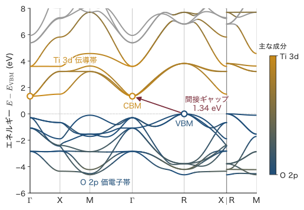
図C.1 から読み取れることを整理しておく．
- 下側の濃青の帯が $\mathrm{O}\ 2p$ から成る価電子帯で，$R$ 点の頂上（3重縮退：同じエネルギーの状態が3つ重なっている．$\mathrm{O}\ 2p$ が $100\,\%$）から約 $4.6$ eV の幅をもつ．上側の琥珀色の帯が $\mathrm{Ti}\ 3d$ から成る伝導帯で，下の3本が $t_{2g}$ 的（$\Gamma$ で $1.34$ eV，3重縮退），その上の2本が $e_g$ 的（$\Gamma$ で $3.60$ eV）である．
- 価電子帯の頂上は $R$ 点（$k=(\tfrac12,\tfrac12,\tfrac12)$），伝導帯の底は $\Gamma$ 点（$k=(0,0,0)$）にあり，両者の間のギャップは間接ギャップである（図中の矢印，$1.34$ eV）．$\Gamma$ の真上の直接ギャップは $1.63$ eV で，実験値（間接 $3.25$ eV，直接 $3.75$ eV，K. van Benthem, C. Elsässer, R. H. French, J. Appl. Phys. 90, 6156 (2001)）に比べて小さい．これは PBE という近似がギャップを過小評価するためである（この計算の基底や $\kk$ メッシュにも依る．C.6.7）．
- どちらの極値も $\Gamma$ か $R$ という，対称性の高い点にある．なぜこの2点なのか，そしてこの2点の状態は実空間でどう違うのか．それが本付録の主題である．
計算の出所と格子定数．図C.1 は，望月研究室の対称性解析・可視化ソフト CrystOD（付録B §B.5）で計算した結果である．この付録には格子定数が3つ出る．実験の室温値 $a=3.905$ Å（本文の模型，付録B），CrystOD の PBE 計算で使った $3.945$ Å（図C.1，C.9，C.10），機械学習ポテンシャル（MACE）で緩和した $3.8995$ Å（フォノンの図C.11〜C.13）である．どれも立方 $\mathrm{SrTiO_3}$ の同じ構造で，$a$ の値だけが計算法でわずかに違う．
この付録では，バンドの数え方のうち，スピンは無視する（どの状態にも上向き・下向きのスピンの2つの状態が対応する）．また，曲線 1 本を「1 つのバンド」と数える．
C.1.2 バンド図の1点とは
定義：バンド図の1点 $(\kk,n)$ は1つの状態
周期的な結晶で，ある $\kk$ とバンド番号 $n$ を決めると，Schrödinger 方程式の解として1つの波動関数 $\psi_{n\kk}(\rr)$ とそのエネルギー $E_n(\kk)$ が決まる．バンド図に描いてあるのは $E_n(\kk)$ だが，各点は波動関数 $\psi_{n\kk}$ の名札でもある．フォノンなら，$(\qq,n)$ に1つの「原子変位のパターン」と振動数 $\omega_n(\qq)$ が対応する．
縮退がある点（たとえば $\Gamma$ や $R$ の3重縮退）では，同じ名札の下に複数の状態が重なっている．
図C.1 の問いを，この定義で言い換えると次のようになる．「$\Gamma$ の伝導帯の底（3つの状態）と $R$ の価電子帯の頂上（3つの状態）は，実空間でどう違う波動関数なのか」．この問いには，C.6.6 の図C.10 で答える（フォノンとの関係は C.7 の図C.13）．
なぜバンド図で躓くのか
バンド図が分かりにくい理由は，たいてい次の3つのどれかである．
- 横軸を場所だと思う．横軸は実空間の位置ではなく，$\kk$ 空間（Brillouin 域）の中を $\Gamma$ から $X$ へ，$X$ から $M$ へと歩いた道のりである．歩いているのは「状態の名前」であって，電子が結晶の中を動いているのではない．
- $\kk$ を運動量だと思う．Bloch 状態は，一般には運動量演算子の固有状態ではない．$\hbar\kk$ は結晶運動量と呼ばれるが，その実体は「隣の胞へ移ったときの位相の回り方」というラベルである（C.2 節）．
- 1つの点が1つの絵だと気づかない．曲線を「エネルギーの山と谷」としてだけ見ていると，各点にスタンプ（軌道の形）と位相の模様がセットで付いていることが見えない．本付録は，この絵を全部描いてみせる．
C.2 $\kk$ は「隣の胞へ移るときの位相の回り方」
この節で分かること：Bloch の定理は「1つ隣の胞へ移ると，波動関数に大きさ1の複素数（位相因子）が掛かる」と言っている．この位相因子の回り方を指定するのが $\kk$ である．位相は「時計の針」の角度として目で見ることができ，周期は $1/k$ のように分母が決める．
C.2.1 時計の針のたとえ
1次元の鎖から始める．原子が間隔 $a$ で並んでいて，$n$ 番目の胞は $x=na$ にあるとする．この結晶中の電子の状態（Bloch 状態）は，次の形に書ける．
式 \eqref{eq:C-bloch} が Bloch の定理である．言葉にすると「波動関数を $n$ 胞ぶんずらすと，全体に位相因子 $\ee^{\ii kna}$ が掛かるだけで，形は変わらない」．3次元では，格子ベクトル $\RR$ だけずらして
$$ \psi_{\kk}(\rr+\RR)=\ee^{\ii\kk\cdot\RR}\,\psi_{\kk}(\rr) $$となる（第16章 §16.2，第11章 §11.4 で導いた式と同じ内容である）．位相因子 $\ee^{\ii kna}$ は，複素平面の単位円の上の点で，絶対値は1だから，エネルギーにも確率密度にも直接は影響しない．その代わり，胞をまたぐたびに「どれだけ回ったか」という角度 $kna$ だけが情報として残る．これを時計の針に見立てる．
なぜ位相因子の絶対値が1なのか．結晶を1胞ずらしても結晶は同じに見えるので，$\psi(x)$ が解なら $\psi(x+a)$ も同じエネルギーの解であり，（縮退がなければ）両者は定数倍しか違わない．どの胞でも電子の見つかる確率が同じでなければならないから，その定数の絶対値は1で，$\ee^{\ii ka}$ と書ける．厳密な導出は第11章・第16章にある．
時計の針のたとえ（約束）
結晶の各胞 $\RR$ に時計が1つずつ付いていて，その針の向きが $\ee^{\ii\kk\cdot\RR}$ だとする．位相 $0$ を真上（12時）に取り，位相 $\theta$ は反時計回りに $\theta$ だけ針を回して表す．同じ胞の中にあるものは，みな同じ時計を見る．
- $\kk=0$：どの胞の針も真上を向く（隣へ移っても針は回らない）．
- $k_1=\tfrac12$：隣の胞へ移るたびに針が $180^\circ$ 回る（真上，真下，真上，…）．
- それ以外：針は $2\pi k_1$ ずつ回る．$k_1=\tfrac14$ なら $90^\circ$ ずつ．
もう一つ，「胞の中の模様」が必要である．原子の周りの軌道の形 $\phi$ を，各胞に同じ形で1つずつ置く場合（軌道が1種類のとき）を考えると，Bloch 状態は，次のように「胞の中のスタンプ $\times$ 胞ごとの位相」の積で書ける．
$$ \psi_{\kk}(\rr)\;=\;\sum_{\RR}\underbrace{\ee^{\ii\kk\cdot\RR}}_{\text{胞ごとの位相（時計の針）}}\;\times\;\underbrace{\phi(\rr-\RR)}_{\text{胞の中のスタンプ（軌道の形）}} $$この形の厳密な書き方（Bloch 和，規格化因子つき）は C.4 節で与える．軌道が1種類のこの場合は，スタンプ $\phi$ は $\kk$ によらず，$\kk$ が変えるのは胞ごとの針の向きだけである．実際の $\mathrm{SrTiO_3}$ のように何種類もの軌道が混ざる場合は，スタンプ（胞の中の軌道や変位の組合せ．Bloch の定理の周期部分 $u_{n\kk}$）は $\kk$ とバンド $n$ によって変わってよい（C.6 節で，同じ $t_{2g}$ の状態でも $\mathrm{O}\ 2p$ の混ざり方が $\Gamma$ と $X$ で違うことを見る）．Bloch の定理が言うのは，1つの状態 $(\kk,n)$ の中では，どの胞にも同じスタンプが押され，胞ごとに位相 $\ee^{\ii\kk\cdot\RR}$ が付くということである．図C.2 は，そのことを1次元の鎖で示したものである．
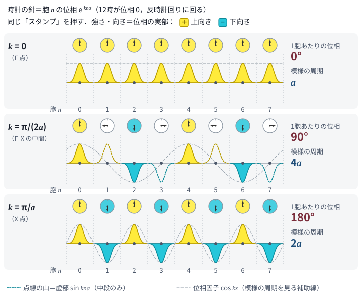
図C.2 の中段で，$n=1,3$ の山が点線なのは，電子がいないのではなく，その胞では実部が 0 で虚部（点線）が最大になっているだけである．実部の2乗と虚部の2乗の和（確率密度）は，どの胞でも同じ値になる（C.2.2 の注意の囲み）．
▶ この図は C.8 のビューア（タブ「位相の模様」）で，スライダーを動かして確かめられる．先に触っておくと，この後の説明が楽になる．
C.2.2 $\kk$ の分率座標と，針の回る角度
3次元の結晶では，逆格子基本ベクトル $\bb_1,\bb_2,\bb_3$ を使って，波数を分率座標 $(k_1,k_2,k_3)$ で書く．
$$ \kk=k_1\bb_1+k_2\bb_2+k_3\bb_3 $$単純立方格子（格子定数 $a$）では $\bb_i=(2\pi/a)\hat{\bm e}_i$ なので $\kk=\dfrac{2\pi}{a}(k_1,k_2,k_3)$ である．このとき，格子ベクトル $\RR=n_1\aa_1+n_2\aa_2+n_3\aa_3$（$n_i$ は整数）に対する位相因子は，次のように分率座標だけで書ける．
導出：位相因子 $\ee^{\ii\kk\cdot\RR}$ を分率座標で書く
逆格子の定義（第3章）は $\aa_i\cdot\bb_j=2\pi\delta_{ij}$ である．これを使って $\kk\cdot\RR$ を展開する．
$$ \kk\cdot\RR=\Bigl(\sum_{j}k_j\bb_j\Bigr)\cdot\Bigl(\sum_{i}n_i\aa_i\Bigr)=\sum_{i,j}k_jn_i\,(\bb_j\cdot\aa_i)=\sum_{i,j}k_jn_i\,2\pi\delta_{ij}=2\pi\,(k_1n_1+k_2n_2+k_3n_3) $$したがって
$$ \ee^{\ii\kk\cdot\RR}=\exp\!\bigl[2\pi\ii\,(k_1n_1+k_2n_2+k_3n_3)\bigr] $$となる．$a_1$ 方向に1胞進むと位相は $2\pi k_1$ だけ，$a_2$ 方向に1胞進むと $2\pi k_2$ だけ，$a_3$ 方向に1胞進むと $2\pi k_3$ だけ回る．つまり分率座標 $k_i$ は，$\aa_i$ 方向へ1胞進んだときに針が回る角度を，$360^\circ$ を単位として測ったものである．
表C.1 に，代表的な $k_i$ に対する，針の回る角度と模様の周期を示す．周期の欄は，位相の模様が元に戻るまでの胞の数で，分率 $k_i$ の分母に等しい（$k_i=p/q$ なら $q$ 胞）．
| $k_i$ | 1胞あたりの位相 $2\pi k_i$ | 針の回転 | 模様の周期（胞の数） | 備考 |
|---|---|---|---|---|
| $0$ | $0$ | $0^\circ$ | 1 | $\Gamma$ 点の方向（全胞が同じ） |
| $\tfrac14$ | $\pi/2$ | $90^\circ$ | 4 | $\Gamma$–$X$ の中点 |
| $\tfrac13$ | $2\pi/3$ | $120^\circ$ | 3 | 演習C.1 |
| $\tfrac12$ | $\pi$ | $180^\circ$ | 2 | $X$ 点（隣と逆向き） |
| $\tfrac34$ | $3\pi/2$ | $270^\circ$（$=-90^\circ$） | 4 | $k_i=-\tfrac14$ と同じ状態 |
| $1$ | $2\pi$ | $360^\circ=0^\circ$ | 1 | $k_i=0$ と同じ状態（逆格子ベクトルだけ違う） |
表の最後の2行は重要である．位相は $360^\circ$ で元に戻るので，$k_i$ と $k_i+1$（すなわち $\kk$ と $\kk+\GG$）は同じ状態を指す．これが，第16章 §16.6 で見た「還元ゾーン形式」と「周期ゾーン形式」の意味であり，$\kk$ を第1 Brillouin 域の中だけで考えれば十分な理由である．
導出：$\kk$ と $\kk+\GG$ は同じ状態である
$\GG$ を逆格子ベクトルとする．すなわち $\GG=m_1\bb_1+m_2\bb_2+m_3\bb_3$（$m_i$ は整数）．格子ベクトル $\RR$ に対する位相因子を比べる．
$$ \ee^{\ii(\kk+\GG)\cdot\RR}=\ee^{\ii\kk\cdot\RR}\,\ee^{\ii\GG\cdot\RR}=\ee^{\ii\kk\cdot\RR}\exp\!\bigl[2\pi\ii\,(m_1n_1+m_2n_2+m_3n_3)\bigr]=\ee^{\ii\kk\cdot\RR} $$最後の等号は，$m_in_i$ が整数なので $\exp[2\pi\ii\times\text{整数}]=1$ だからである．すべての格子ベクトル $\RR$ で位相因子が等しいから，$\kk$ と $\kk+\GG$ は，Bloch の定理 \eqref{eq:C-bloch} が要求する性質を同じに満たす．つまり胞ごとの針の向きがまったく同じになる．
注意：$\abs{\psi}^2$ は周期的で，$\kk$ は密度には現れない
式 \eqref{eq:C-bloch} の絶対値の2乗を取ると，$\abs{\ee^{\ii\kk\cdot\RR}}^2=1$ なので
$$ \abs{\psi_{\kk}(\rr+\RR)}^2=\abs{\psi_{\kk}(\rr)}^2 $$となる．つまり電子の確率密度は，どの $\kk$ の状態でも結晶と同じ周期で繰り返す．$\kk$ が効くのは確率密度ではなく，波動関数の位相である．位相は，隣の胞どうしの波動関数が足し合わさるとき（干渉）にだけ効く．この干渉で，隣どうしが強め合うか（結合的）打ち消し合うか（反結合的）が決まり，それがエネルギー $E_n(\kk)$ の違いになる．これが，以降のすべての節で使う考え方である．
$\kk$ は運動量ではない
自由電子では $\psi=\ee^{\ii\kk\cdot\rr}$ が運動量演算子 $-\ii\hbar\nabla$ の固有状態で，固有値 $\hbar\kk$ が本当の運動量であった（第15章）．結晶中の Bloch 状態 $\psi_{\kk}=\ee^{\ii\kk\cdot\rr}u_{\kk}(\rr)$（$u_{\kk}$ は格子と同じ周期の関数）は，$u_{\kk}$ が一定でない限り運動量の固有状態ではない．$\hbar\kk$ は結晶運動量と呼ばれるが，本質は「$\RR$ だけずれたときの位相のラベル」である．実際，$\kk$ と $\kk+\GG$ が同じ状態なのだから，$\kk$ が一意の運動量であるはずがない．
第11章 §11.3 は同じことを群論の言葉で言っている（並進群の既約表現を指定するラベルが $\kk$ である）．第11章の表現行列 $D^{(\kk)}(\{E|\RR\})=\ee^{-\ii\kk\cdot\RR}$ の符号が $-$ なのは，並進の定義 $\hat P f(\rr)=f(\rr-\RR)$ の約束によるもので，式 \eqref{eq:C-bloch} と同じ内容である．
C.2.3 実数にとれる状態と，進行波
$k=0$ と $k=\pi/a$ では，位相因子が $\pm1$ の実数なので，波動関数全体を実数にとれる（図C.2 の1段目と3段目）．一方，$k=\pi/(2a)$ では位相因子が $1,\ii,-1,-\ii,\dots$ と複素数になり，波動関数は複素数でなければならない．この違いは，次の条件で決まる．
物理的意味：実数にとれる点と定在波，一般の点と進行波
$\kk$ と $-\kk$ の状態は，エネルギーが等しい．両者が同じ状態になる条件は $\kk\equiv-\kk$（逆格子ベクトルを除いて等しい）で，これは $2\kk$ が逆格子ベクトルになることと同値である．単純立方では，$k_i$ がすべて $0$ か $\tfrac12$ の8点がこれに当たる．$\Gamma$，$X$（3本），$M$（3本），$R$ である（C.3 節）．この点では位相因子が $\pm1$ だけで，波動関数を実数にとれる（一般に $\psi_{\kk}$ の複素共役は $-\kk$ の状態なので，$\kk\equiv-\kk$ の点では $\mathrm{Re}\,\psi$ も $\mathrm{Im}\,\psi$ もその点の状態になる）．実数の波動関数は，時間因子 $\ee^{-\ii\omega t}$ を掛けても節の位置が動かない定在波である（第13章 §13.4，第16章 §16.1 のゾーン境界の定在波と同じもの）．
一般の $\kk$ では $\ee^{\ii\kk\cdot\RR}$ が複素数で，$\psi_{\kk}$ は $\ee^{\ii(\kk\cdot\rr-\omega t)}$ のように位相が空間を動いていく進行波になる．$\psi_{\kk}$ と $\psi_{-\kk}$ は互いに複素共役で，同じエネルギーをもつ．この2つの1次結合 $\psi_{\kk}\pm\psi_{-\kk}$ をとれば実数の定在波が作れるが，それは $\kk$ の状態ではなく $\kk$ と $-\kk$ の混ざった状態である．
例題C.1 $\kk=(\tfrac14,0,0)$ の位相の模様
単純立方格子で $\kk=\dfrac{2\pi}{a}\bigl(\tfrac14,0,0\bigr)$ の状態について，(1) 各方向に1胞進んだときの位相，(2) 胞 $\RR=(n_1,n_2,n_3)$ の位相因子，(3) 模様の周期，(4) 実数の波動関数にとれるか，を答えよ．
解答：(1) 位相 $2\pi k_i$ は，$a_1$ 方向に $2\pi\cdot\tfrac14=\pi/2$（$90^\circ$），$a_2$，$a_3$ 方向には $0$ である．(2) 式を使って
$$ \ee^{\ii\kk\cdot\RR}=\exp\!\Bigl[2\pi\ii\Bigl(\tfrac14n_1+0\cdot n_2+0\cdot n_3\Bigr)\Bigr]=\ee^{\ii\pi n_1/2}=\ii^{\,n_1} $$$n_1=0,1,2,3,4$ に対して $1,\ \ii,\ -1,\ -\ii,\ 1$ となる．実部 $\cos(\pi n_1/2)$ は $1,0,-1,0,1,\dots$ で，たとえば $\RR=(2,1,0)$ の位相因子は $\ii^2=-1$，$\RR=(3,5,2)$ では $\ii^3=-\ii$ である．(3) $n_1$ が4増えると位相が元に戻るので，模様は $a_1$ 方向に 4胞（$4a$）の周期をもつ．$a_2$，$a_3$ 方向には同じ位相が続く．(4) $-\kk=(-\tfrac14,0,0)$ は $\kk$ と逆格子ベクトルの差でも等しくならない（$2\kk=(\tfrac12,0,0)\cdot\tfrac{2\pi}{a}$ は逆格子ベクトルではない）．したがって位相因子が複素数になり，波動関数は実数にとれない．進行波である（図C.2 の2段目）．
▶ 例題C.1 の $\kk$ を動かして，針と模様の変化を C.8 のビューアで確かめてみよう．
C.3 単純立方の Brillouin 域と $\Gamma$，$X$，$M$，$R$
この節で分かること：単純立方格子で，バンド図に現れる4つの点 $\Gamma$，$X$，$M$，$R$ は，位相の模様が「全部同じ」「1方向で交互」「2方向で交互」「3方向で交互」になる点である．この模様を目で見て，その周期と対称性（小群）を表にまとめる．
C.3.1 Brillouin 域と高対称な点
単純立方格子（格子定数 $a$）の逆格子は一辺 $2\pi/a$ の単純立方格子で，第1 Brillouin 域も一辺 $2\pi/a$ の立方体である（第3章 §3.7）．$\mathrm{SrTiO_3}$ の立方相は単純立方格子をなす（Sr，Ti，O の5原子が1つの胞に入る）ので，この Brillouin 域をそのまま使う．図C.3 に，バンド図で使う4つの高対称点を示す．
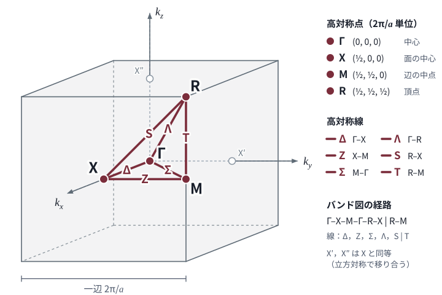
高対称線の記号と $X$ 点の代表（読み飛ばしてよい）
図C.3 の経路は図C.1 と同じ $\Gamma$–$X$–$M$–$\Gamma$–$R$–$X\,|\,R$–$M$ である．各区間の高対称線には記号があり，$\Gamma$–$X$ が $\Delta$，$X$–$M$ が $Z$，$M$–$\Gamma$ が $\Sigma$，$\Gamma$–$R$ が $\Lambda$，$R$–$X$ が $S$，$R$–$M$ が $T$ である（CrystOD の出力では $\Delta$，$\Sigma$，$\Lambda$ が DT，SM，LD と表示される）．この付録で使うのは $\Delta$（C.6.5）と $\Lambda$（例題C.2）だけである．
立方対称では $(\tfrac12,0,0)$，$(0,\tfrac12,0)$，$(0,0,\tfrac12)$ は互いに移り合う等価な点で，この付録では $X=(\tfrac12,0,0)$ を代表に使う．CrystOD の crystod-bz や準位ビューア（C.6.6）の $X$ は $(0,\tfrac12,0)$ で，エネルギー，縮退，対称性は同じである（$x$ と $y$ の役割が入れ替わるだけ）．C.6.2 のコマンド例の --kpoint 0.5 0 0 は $(\tfrac12,0,0)$ に当たる．
C.3.2 位相の模様：図で見る
図C.4 は，$2\times2\times2$ 個の胞を離して並べ，各胞の位相因子 $\ee^{\ii\kk\cdot\RR}$ の実部の符号を黄（$+$）とシアン（$-$）で塗ったものである．$\Gamma$，$X$，$M$，$R$ では位相因子が $\pm1$ だけなので，このように2色で完全に描ける．
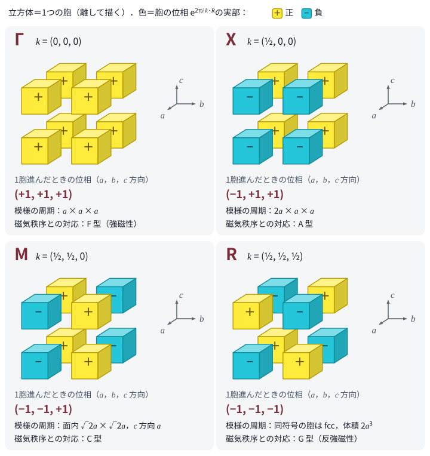
図C.4 は，この付録でいちばん大切な図である．次の4つの絵を頭に入れておいてほしい．
- $\Gamma$：どの胞も同じ．「全部黄」．
- $X$（$\tfrac12,0,0$）：$a$ 方向に1胞進むたびに符号が反転する．$b$ 方向，$c$ 方向には同じ．層状の縞模様．
- $M$（$\tfrac12,\tfrac12,0$）：$a$ 方向にも $b$ 方向にも反転する．$ab$ 面内は市松模様で，$c$ 方向には同じ（市松模様の柱が $c$ 方向に伸びる）．
- $R$（$\tfrac12,\tfrac12,\tfrac12$）：3方向とも反転する．3次元の市松模様（岩塩型に似た配置）．
表C.2 に，これらの点の性質をまとめる．
| 点 | $\kk$（分率） | 1胞進んだときの位相 $(a,b,c)$ | 位相の模様の周期 | 磁気秩序（例） |
|---|---|---|---|---|
| $\Gamma$ | $(0,0,0)$ | $(+1,+1,+1)$ | $a\times a\times a$ | F 型（強磁性） |
| $X$ | $(\tfrac12,0,0)$ | $(-1,+1,+1)$ | $2a\times a\times a$ | A 型 |
| $M$ | $(\tfrac12,\tfrac12,0)$ | $(-1,-1,+1)$ | 面内 $\sqrt2a\times\sqrt2a$，$c$ 方向 $a$ | C 型 |
| $R$ | $(\tfrac12,\tfrac12,\tfrac12)$ | $(-1,-1,-1)$ | 同符号の胞が fcc 格子をなす（基本胞の体積 $2a^3$） | G 型（反強磁性） |
表の下に，あとで使う2つの用語を補う．各点の小群とは，その $\kk$ を動かさない（または逆格子ベクトルだけ動かす）対称操作の集まりで，その点で状態がどれだけ縮退できるかを決める（第11章 §11.5，§11.6）．$\Gamma$ と $R$ では立方体の対称性すべて（$O_h$，48個）が残るので3重縮退が現れ（$\Gamma$ の $t_{2g}$，$R$ の価電子帯の頂上），$X$ と $M$ では $D_{4h}$（16個）に下がるので2重縮退までである．立方対称の操作で互いに移り合う等価な $\kk$ の集まりを星といい，その腕の数は，$X$ が3本（$(\tfrac12,0,0)$，$(0,\tfrac12,0)$，$(0,0,\tfrac12)$），$M$ も3本，$\Gamma$ と $R$ は1本である．
同符号の胞がつくる格子の体積に注目しよう．$X$ の模様の周期は $2a\times a\times a$（体積 $2a^3$），$M$ は面内 $\sqrt2a\times\sqrt2a$ で $c$ 方向 $a$（体積 $2a^3$），$R$ は fcc の基本胞（体積 $2a^3$）である．$X$，$M$，$R$ のどの点でも，位相の模様を含めた「新しい周期」の基本胞は，元の胞のちょうど2倍（体積 $2a^3$）になる．$\kk=\tfrac12\bm G_i$ の点（$\bm G_i$ は逆格子ベクトル）では，位相因子が $\pm1$ で，周期が2倍に伸びるからである．このことは，C.7 節で酸素八面体の回転が凍結すると単位胞が2倍になることと直結する．
導出：$(\tfrac12,0,0)$ と $(-\tfrac12,0,0)$ は同じ状態である
$\kk_+=\dfrac{2\pi}{a}\bigl(\tfrac12,0,0\bigr)$ と $\kk_-=\dfrac{2\pi}{a}\bigl(-\tfrac12,0,0\bigr)$ の，胞 $\RR=(n_1,n_2,n_3)a$ での位相因子を求める．
$$ \ee^{\ii\kk_+\cdot\RR}=\exp\!\Bigl[2\pi\ii\cdot\tfrac12n_1\Bigr]=\ee^{\ii\pi n_1}=(-1)^{n_1} $$ $$ \ee^{\ii\kk_-\cdot\RR}=\exp\!\Bigl[2\pi\ii\cdot\bigl(-\tfrac12\bigr)n_1\Bigr]=\ee^{-\ii\pi n_1}=(-1)^{n_1} $$ここで $\ee^{\pm\ii\pi n_1}=\cos\pi n_1\pm\ii\sin\pi n_1=\cos\pi n_1=(-1)^{n_1}$（$n_1$ は整数なので $\sin\pi n_1=0$）を使った．すべての胞で位相因子が等しいので，$\kk_+$ と $\kk_-$ は同じ状態を指す．一般に，$2\kk$ が逆格子ベクトルになる点（$\kk\equiv-\kk$）では，位相因子 $\ee^{\ii\kk\cdot\RR}$ が $\ee^{-\ii\kk\cdot\RR}$（複素共役）と等しいので，$\pm1$ の実数になる．
単純立方で $k_i\in\{0,\tfrac12\}$ の組合せは $2^3=8$ 通りあり，$\Gamma$（1通り），$X$（3通り），$M$（3通り），$R$（1通り）に分かれる．第1 Brillouin 域の中で $\kk$ と $-\kk$ が同じ点になるのは，これら8個（時間反転で不変な波数）に限られる．
磁気秩序との対応（例として）
強磁性体や反強磁性体で，スピンの向きを格子の各点で $+1$，$-1$ と書くと，その並びは図C.4 の位相の模様と同じになる．$\Gamma$ は全部同じ向き（F 型，強磁性），$X$ は1方向に交互（A 型），$M$ は2方向に交互（C 型），$R$ は3方向に交互（G 型，3次元の市松模様）である．磁気秩序の周期 $\kk$ を指定すること（たとえば $(\tfrac12,\tfrac12,\tfrac12)$）は，スピンの符号が胞ごとに $\ee^{\ii\kk\cdot\RR}$ で変わることを指定することである．本付録の「位相の模様」は，電子やフォノンについて，これと同じことを波動関数の符号について言っている．磁性は第20章を参照．
▶ 図C.4 の4つの点は，C.8 のビューアのボタン $\Gamma$，$X$，$M$，$R$ で見られ，スライダーで $\Gamma$ から $X$ へ動かすと，模様の周期が伸びていく様子が分かる．
C.4 $s$ 軌道の Bloch 和 — 結合と反結合を数える
この節で分かること：最も単純な場合（各胞に $s$ 軌道が1つ）で，Bloch 状態のエネルギーは，「隣どうしが結合的な組と反結合的な組が何本ずつあるか」を数えるだけで分かる．この数え方が，$p$ 軌道（C.5 節）と $d$ 軌道（C.6 節）でもそのまま使える．数えた結果は，あとで式で確かめる（C.4.3）．
C.4.1 Bloch 和
各胞（格子点 $\RR$）に $s$ 軌道 $\phi(\rr-\RR)$ が1つずつあるとする．位相 $\ee^{\ii\kk\cdot\RR}$ を係数にして足し合わせたものを Bloch 和という（第18章 §18.4 の強束縛近似と同じ）．
$N$ は胞の数である．「胞の中のスタンプ $\phi$ を，胞ごとに位相 $\ee^{\ii\kk\cdot\RR}$ を掛けて押した」ものになっている（軌道が1種類なので，スタンプは $\kk$ によらない）．これが Bloch の定理を満たすことは，C.4.3 で確かめる．
C.4.2 結合と反結合を数える
Bloch 和 \eqref{eq:C-blochsum} の中の，隣り合う2つの原子の関係を見よう．中心の原子の係数を $1$ とすると，位置 $\bm\rho$ にある隣の原子の係数は $\ee^{\ii\kk\cdot\bm\rho}$ である．$\Gamma$，$X$，$M$，$R$ では，この比が $+1$ か $-1$ になる．
- 比が $+1$：隣と同符号．波動関数が隣へつながるときに打ち消さない．これは結合的（bonding）な組で，エネルギーが $t$ だけ下がる．ここで $t$ は，隣り合う $s$ 軌道が同符号で重なったときのエネルギーの寄与で，$t<0$ である（第18章の $-\gamma$．なぜ負かは C.4.3）．
- 比が $-1$：隣と異符号．波動関数が隣へ移ると符号が変わり，間で節ができる．これは反結合的（antibonding）な組で，寄与は $-t$（$>0$）で上がる．
したがって，中心の原子から出る6本の最近接の組のうち，結合的な組が $m$ 本，反結合的な組が $n$ 本なら，$s$ 軌道の準位を $\epsilon_s$ として
$$ E=\epsilon_s+(m-n)\,t,\qquad m+n=6 $$である．図C.5 に，4つの点での $s$ 軌道の符号の並びと，結合・反結合の組を描いた．
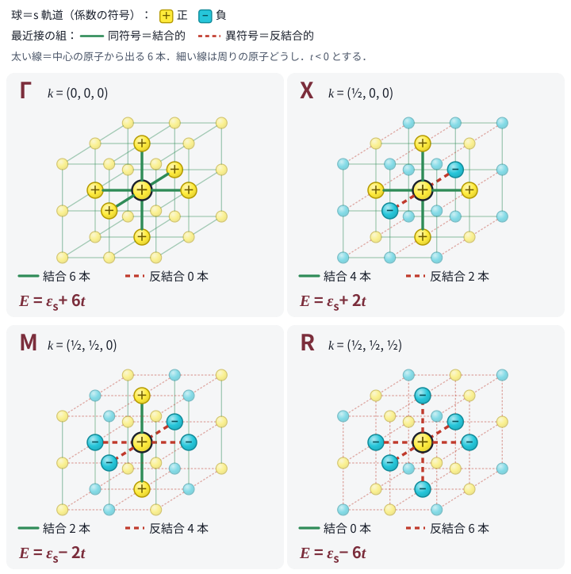
| 点 | $\kk$（分率） | 結合 $m$ | 反結合 $n$ | $E-\epsilon_s$ | $t=-1$ のとき $(E-\epsilon_s)/\abs{t}$ |
|---|---|---|---|---|---|
| $\Gamma$ | $(0,0,0)$ | 6 | 0 | $6t$ | $-6$（最低） |
| $X$ | $(\tfrac12,0,0)$ | 4 | 2 | $2t$ | $-2$ |
| $M$ | $(\tfrac12,\tfrac12,0)$ | 2 | 4 | $-2t$ | $+2$ |
| $R$ | $(\tfrac12,\tfrac12,\tfrac12)$ | 0 | 6 | $-6t$ | $+6$（最高） |
表C.3 の数え方が，図C.5 の絵から読めることを確かめてほしい．$X$ では，$a$ 方向の隣（係数が交互に反転する方向）の2本だけが反結合的で，$b$，$c$ 方向の4本は結合的である．$M$ では $a$，$b$ 方向の4本が反結合的，$R$ では6本すべてが反結合的になる．
▶ C.8 のビューア（タブ「軌道の Bloch 和」で $s$ を選ぶ）で，$\Gamma$，$X$，$M$，$R$ の緑の線と赤の線の本数を数えて，表C.3 と比べられる．
C.4.3 式で確かめる
ここまでの絵で読んだ結果を，式で確かめる．まず Bloch 和が Bloch の定理を満たすことを確かめ，次にエネルギーを導く．式を追わなくても先へ進める．
導出：Bloch 和 \eqref{eq:C-blochsum} は Bloch の定理を満たす
$\rr$ を格子ベクトル $\RR'$ だけずらして，式 \eqref{eq:C-blochsum} に代入する．
$$ \psi_{\kk}(\rr+\RR')=\frac{1}{\sqrt N}\sum_{\RR}\ee^{\ii\kk\cdot\RR}\,\phi(\rr+\RR'-\RR) $$和の変数を $\RR''=\RR-\RR'$ に取り替える（$\RR$ が全格子ベクトルを動くとき $\RR''$ も全格子ベクトルを動く；周期境界条件を仮定する）．$\RR=\RR''+\RR'$ なので
$$ \psi_{\kk}(\rr+\RR')=\frac{1}{\sqrt N}\sum_{\RR''}\ee^{\ii\kk\cdot(\RR''+\RR')}\,\phi(\rr-\RR'')=\ee^{\ii\kk\cdot\RR'}\cdot\frac{1}{\sqrt N}\sum_{\RR''}\ee^{\ii\kk\cdot\RR''}\phi(\rr-\RR'')=\ee^{\ii\kk\cdot\RR'}\,\psi_{\kk}(\rr) $$となり，式 \eqref{eq:C-bloch} の3次元版が成り立つ．位相因子 $\ee^{\ii\kk\cdot\RR}$ が「ずらしたときに全体に掛かる位相」になっている．
エネルギーは $E(\kk)=\bra{\psi_{\kk}}\Ham\ket{\psi_{\kk}}$ で与えられる．ここでは第18章 §18.4 と同じ近似を使う．(i) 異なる胞の $s$ 軌道の重なり積分は無視する（$\langle\phi_{\RR}|\phi_{\RR'}\rangle=\delta_{\RR\RR'}$ とみなす），(ii) 飛び移り積分は最近接だけを残す．
導出：$s$ 軌道の強束縛バンド
式 \eqref{eq:C-blochsum} を代入すると，
$$ E(\kk)=\frac1N\sum_{\RR,\RR'}\ee^{-\ii\kk\cdot\RR}\,\ee^{\ii\kk\cdot\RR'}\,\bra{\phi_{\RR}}\Ham\ket{\phi_{\RR'}} $$である（ここで $\phi_{\RR}(\rr)=\phi(\rr-\RR)$ と略記した）．$\Ham$ は格子並進で不変なので，行列要素は2つの胞の相対位置 $\bm\rho=\RR'-\RR$ だけで決まる．
$$ \bra{\phi_{\RR}}\Ham\ket{\phi_{\RR+\bm\rho}}\equiv h(\bm\rho) $$$\RR$ を固定して $\bm\rho$ について和を取ると，$\RR$ についての和は $N$ 個の同じ項を足すだけで $\frac1N\sum_{\RR}=1$ になる．したがって
$$ E(\kk)=\sum_{\bm\rho}\ee^{\ii\kk\cdot\bm\rho}\,h(\bm\rho) $$$\bm\rho=0$ の項は，$s$ 軌道の（結晶中での）準位 $h(0)\equiv\epsilon_s$ である．$\bm\rho\neq0$ では，最近接の6個だけを残し，それらが等価なので同じ値 $h(\pm a\hat{\bm x})=h(\pm a\hat{\bm y})=h(\pm a\hat{\bm z})\equiv t$ とおく．$s$ 軌道どうしが重なる領域では軌道が同符号で，核の引力ポテンシャルが負であるから，$t<0$ である（第18章の $-\gamma$ に当たる）．すると
$$ E(\kk)=\epsilon_s+t\left(\ee^{\ii k_xa}+\ee^{-\ii k_xa}+\ee^{\ii k_ya}+\ee^{-\ii k_ya}+\ee^{\ii k_za}+\ee^{-\ii k_za}\right) $$$\ee^{\ii\theta}+\ee^{-\ii\theta}=2\cos\theta$ を3回使って
を得る．第18章の記号では $\epsilon_s=-\alpha$，$t=-\gamma$ と書いたものと同じ式である（第18章 §18.4.3 の単純立方格子）．
式 \eqref{eq:C-sband} から直接確かめておく．$X$ では $\cos k_xa=\cos\pi=-1$，$\cos k_ya=\cos k_za=1$ なので $E=\epsilon_s+2t(-1+1+1)=\epsilon_s+2t$．$M$ では $\cos k_xa=\cos k_ya=-1$，$\cos k_za=1$ なので $E=\epsilon_s+2t(-1-1+1)=\epsilon_s-2t$．$R$ では3つとも $-1$ なので $E=\epsilon_s-6t$．数え上げの結果（表C.3）と一致する．バンドの底（$\Gamma$）と頂上（$R$）の差は $12\abs{t}$（バンド幅）である．
C.4.4 $s$ バンド全体
図C.6 は，この $s$ バンドを，図C.1 と同じ経路に沿って描いたものである．
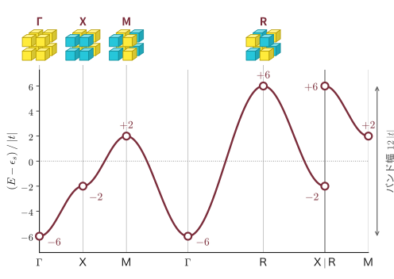
図C.6 では，$\Gamma$，$X$，$M$，$R$ のどれでも，曲線の傾き（群速度）が $0$ になっている．これは偶然ではない．C.2 節で見たように，これらの点では波動関数が実数の定在波で，右向きと左向きの波が同じ重みで重なっているからである．$E(\kk)$ が $\kk\to-\kk$ で不変で，かつ $\kk\to\kk+\GG$ で不変であることから，これら4つの点（$\kk\equiv-\kk$ の点）では，どの方向にも $\nabla_{\kk}E=0$ になる．
例題C.2 $\Lambda$ 線の中点 $\kk=(\tfrac14,\tfrac14,\tfrac14)$ のエネルギー
$s$ バンド \eqref{eq:C-sband} で $\kk=\dfrac{2\pi}{a}\bigl(\tfrac14,\tfrac14,\tfrac14\bigr)$（$\Gamma$–$R$ 線の中点）のエネルギーを求め，この状態の位相の模様と，結合・反結合の数え方（$m$，$n$）への対応を述べよ．
解答：$k_ia=2\pi\cdot\tfrac14=\pi/2$ だから $\cos k_ia=\cos(\pi/2)=0$ である．式 \eqref{eq:C-sband} より
$$ E=\epsilon_s+2t\,(0+0+0)=\epsilon_s $$つまりバンドの中心（$\Gamma$ の $\epsilon_s+6t$ と $R$ の $\epsilon_s-6t$ の中間）である．位相の模様は，各方向に1胞進むごとに $90^\circ$ 回る（周期4胞）．中心の原子から見て，$+x$ 側の隣の位相は $\ee^{\ii\pi/2}=\ii$，$-x$ 側は $\ee^{-\ii\pi/2}=-\ii$ で，互いに逆向きに $90^\circ$ ずれている．そのため，$+x$ 側と $-x$ 側の寄与 $t(\ii+(-\ii))=0$ が打ち消し合う．$y$，$z$ 方向も同じである．位相が $\pm1$ でないので「結合的」「反結合的」とはっきり分けられず，6本の組が結合と反結合の中間（位相が $90^\circ$ ずれた組）になっていて，正味で $m-n=0$ に相当する．一般の位相角 $\theta$ の組は $2t\cos\theta$ を寄与する（$\theta=0$ なら結合，$\theta=\pi$ なら反結合，$\theta=\pi/2$ ならちょうど中間）．この状態は複素数の波動関数で，$[111]$ 方向に伝わる進行波である．
C.5 $p$ 軌道 — 軌道自身の符号と Bloch の位相を掛け算する
この節で分かること：$p$ 軌道は，軌道自身が $+$ の葉と $-$ の葉をもつので，隣どうしが結合的か反結合的かは「軌道自身の符号の向き」と「Bloch の位相（$\pm1$）」の掛け算で決まる．絵（図C.7(a)）で読むと，$p_x$ バンドの最低点は $\Gamma$ ではなく $X$ になる．$X$ で縮退が $p_x$（1重）と $(p_y,p_z)$（2重）に割れる理由も，絵で分かる．式は，絵で読んだ結果を確かめるために，あとで使う（C.5.3）．
C.5.1 $\sigma$ 結合と $\pi$ 結合の符号
各格子点に $p_x$ 軌道（$+x$ 側の葉が $+$，$-x$ 側の葉が $-$）を置き，$s$ 軌道のときと同じ形で Bloch 和 $\psi_{\kk}=N^{-1/2}\sum_{\RR}\ee^{\ii\kk\cdot\RR}\,p_x(\rr-\RR)$ を作る．$s$ 軌道との違いは，隣へ向かう方向によって，軌道の重なり方が2種類に分かれることである．
- $\sigma$ 型（$x$ 方向の隣）：$p_x$ は $x$ 軸上に並ぶ．同じ係数（$+1$）で隣に並ぶと，左の軌道の $+$ の葉が，右の軌道の $-$ の葉と向き合う．向き合う葉が異符号なので，重なりの領域に節ができ，反結合的になる．行列要素は正：$V_{pp\sigma}>0$．
- $\pi$ 型（$y$ 方向，$z$ 方向の隣）：$p_x$ は $y$ 軸上の隣と，葉を横に並べた形になる．同じ係数で並べると，$+$ の葉の隣に $+$ の葉，$-$ の隣に $-$ が来る．同符号どうしが隣り合うので，$s$ 軌道と同じく結合的になる．行列要素は負：$V_{pp\pi}<0$．
以下，$V_\sigma\equiv V_{pp\sigma}>0$，$V_\pi\equiv V_{pp\pi}<0$ と略記する．この符号の組（$V_{pp\sigma}>0$，$V_{pp\pi}<0$）は Slater–Koster の表の標準的な約束である（第18章の参考文献）．値は模型のパラメータであって計算値ではない．この節の例では $V_\sigma=+1$，$V_\pi=-0.25$ を使う．
結合・反結合の見分け方（3ステップ）
(1) 隣へ向かう方向で，向き合う（または並ぶ）葉の符号を，係数が同じときについて読む（$\sigma$：向き合う葉は異符号，$\pi$：並ぶ葉は同符号）．(2) Bloch の位相因子（その方向の隣へ移ったときの $\pm1$）を掛ける．位相因子が $-1$ なら，隣の軌道の符号が全部逆になるので，(1) の結論が逆転する．(3) 向き合う葉が同符号なら結合的，異符号なら反結合的．
C.5.2 $\Gamma$，$X$，$X'$ の $p_x$ 状態を絵で読む
図C.7(a) は，$z=0$ の層を上から見て，$p_x$ 軌道を $4\times3$ 個並べたものである．胞の Bloch 係数 $\pm1$ を掛けて，係数が $-1$ の胞では葉の色を逆にして描いた．向き合う葉の符号から，$x$ 方向の隣（$\sigma$）と $y$ 方向の隣（$\pi$）が結合的か反結合的かを，色の線で示してある．
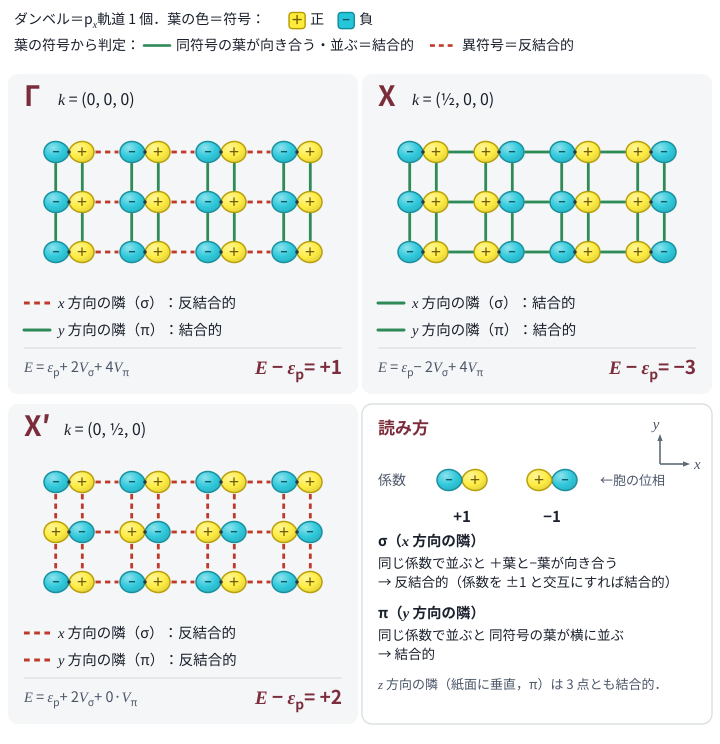
図C.7(a) の3つのパネルを，C.5.1 の3ステップで読んでみよう．以下，エネルギーは $E-\epsilon_p$ を $V_\sigma=1$，$V_\pi=-0.25$ で測る．
- $\Gamma$ $(0,0,0)$：係数はどの胞も $+1$．$x$ 方向の隣（$\sigma$）は，$+$ 葉と $-$ 葉が向き合う（反結合的，$+2V_\sigma$）．$y$ 方向の隣（$\pi$）は同符号が並ぶ（結合的，$z$ 方向の隣も同じで $4V_\pi$）．よって $E-\epsilon_p=2V_\sigma+4V_\pi=2-1=+1$．
- $X$ $(\tfrac12,0,0)$：$x$ 方向に係数が交互（$+1,-1,+1,\dots$）．隣の係数が $-1$ なので，向き合う葉が同符号になり，$\sigma$ が結合的（$-2V_\sigma$）になる．$y$，$z$ 方向は係数が同じなので $\pi$ は結合的（$4V_\pi$）．よって $E-\epsilon_p=-2V_\sigma+4V_\pi=-2-1=-3$．これが $p_x$ バンドの最低点である．
- $X'$ $(0,\tfrac12,0)$：係数が $y$ 方向に交互．$x$ 方向は係数が同じなので $\sigma$ は反結合的（$+2V_\sigma$）．$y$ 方向は係数が交互になり，$\pi$ の結合性が逆転して反結合的になる（$-2V_\pi$）が，$z$ 方向は係数が同じで結合的（$+2V_\pi$）なので，$\pi$ の寄与は互いに打ち消す．よって $E-\epsilon_p=2V_\sigma+2V_\pi(-1+1)=+2$．
C.5.3 式で確かめる
図C.7(a) で読んだエネルギーを，式で確かめる．式を追わなくても先へ進める．
導出：単純立方の $p_x$ バンド
C.4 節と同じ手順で，$E(\kk)=\sum_{\bm\rho}\ee^{\ii\kk\cdot\bm\rho}\,h(\bm\rho)$ が得られる．ここで $h(\bm\rho)=\bra{p_x(\rr)}\Ham\ket{p_x(\rr-\bm\rho)}$ である（重なり積分は無視し，最近接だけを残す）．最近接の6個の値は，上の $\sigma$，$\pi$ の分類から
$$ h(\pm a\hat{\bm x})=V_\sigma,\qquad h(\pm a\hat{\bm y})=h(\pm a\hat{\bm z})=V_\pi $$である．$s$ 軌道のときと同様に $\ee^{\ii\theta}+\ee^{-\ii\theta}=2\cos\theta$ を使うと，
を得る．$p_y$，$p_z$ バンドは，添字を巡回的に入れ替えて $E_{p_y}=\epsilon_p+2V_\sigma\cos k_ya+2V_\pi(\cos k_za+\cos k_xa)$，$E_{p_z}=\epsilon_p+2V_\sigma\cos k_za+2V_\pi(\cos k_xa+\cos k_ya)$ である．
$p_x$，$p_y$，$p_z$ は混ざらない．$p_x$ と $p_y$ の間の行列要素 $\bra{p_x}\Ham\ket{p_y(\rr-\bm\rho)}$ は，最近接の6個の $\bm\rho$ のすべてで 0 である．たとえば $\bm\rho=a\hat{\bm x}$ では，面 $y\to-y$ についての鏡映で，$p_x$ は不変（偶），$p_y$ は符号が変わる（奇）．$\Ham$ は鏡映で不変なので，偶と奇の間の行列要素は 0 になる．$\bm\rho=a\hat{\bm y}$ や $a\hat{\bm z}$ では面 $x\to-x$ について同じ議論ができる（$p_x$ が奇，$p_y$ が偶）．よって3つの $p$ バンドは，互いに独立な「$s$ 軌道のようなバンド」として式 \eqref{eq:C-pxband} で書ける．
式 \eqref{eq:C-pxband} は $s$ バンドの式 \eqref{eq:C-sband} と似ているが，$x$ 方向の係数 $V_\sigma$ と $y$，$z$ 方向の係数 $V_\pi$ が違う．しかも $V_\sigma>0$ なので，$s$ 軌道のとき（$t<0$）と違って，$\cos k_xa=+1$ の点（$\Gamma$ など）が最低ではない．
式 \eqref{eq:C-pxband} を使っても同じ値が出る（$X'$ では $\cos k_ya=\cos\pi=-1$，$\cos k_za=+1$ で $2V_\pi(-1+1)=0$ となる）．絵で読んだことと，式の値が一致している．
例題C.3 $p_x$ バンドの $M$ 点と $R$ 点の値
式 \eqref{eq:C-pxband} から，$V_\sigma=1$，$V_\pi=-0.25$ のとき，$M=(\tfrac12,\tfrac12,0)$ と $R=(\tfrac12,\tfrac12,\tfrac12)$ での $p_x$，$p_y$，$p_z$ のエネルギー $E-\epsilon_p$ を求め，結合・反結合の言葉で説明せよ．
解答：$M$ では $\cos k_xa=\cos k_ya=-1$，$\cos k_za=+1$．
$$ \begin{aligned} E_{p_x}-\epsilon_p&=2V_\sigma(-1)+2V_\pi\bigl[(-1)+(+1)\bigr]=-2\\ E_{p_y}-\epsilon_p&=2V_\sigma(-1)+2V_\pi\bigl[(+1)+(-1)\bigr]=-2\\ E_{p_z}-\epsilon_p&=2V_\sigma(+1)+2V_\pi\bigl[(-1)+(-1)\bigr]=2-4V_\pi=2+1=+3 \end{aligned} $$$p_x$ と $p_y$ が同じ値（$-2$，2重縮退）で，$p_z$ だけが $+3$（1重）である．言葉で言うと，$p_z$ は $z$ 方向の隣（$\sigma$，係数が同じ）で反結合的（$+2V_\sigma$），$x$ と $y$ 方向の隣（$\pi$，係数が交互）でも反結合的（$-4V_\pi=+1$）なので最も高い．$p_x$ は，$x$ 方向の隣（$\sigma$）が係数交互で結合的（$-2V_\sigma$），$y$ 方向の隣（$\pi$）が係数交互で反結合的，$z$ 方向の隣（$\pi$）が係数同じで結合的なので，$\pi$ の2つが打ち消して $-2$ になる．
$R$ では3つの $\cos$ がすべて $-1$ なので，$p_x$，$p_y$，$p_z$ のどれも $E-\epsilon_p=-2V_\sigma-4V_\pi=-2+1=-1$．3重縮退である．
C.5.4 $p$ バンドと縮退の割れ方
図C.7(b) に，3つの $p$ バンドを図C.6 と同じ経路で描いた．
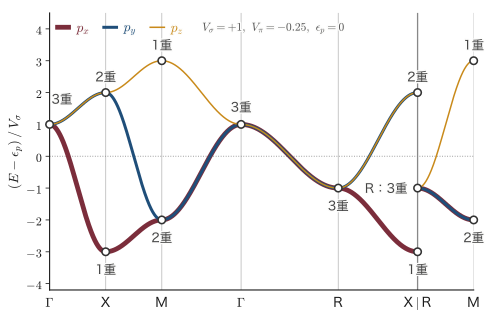
表C.4 に，$\Gamma$，$X$，$M$，$R$ での値と縮退のしかたをまとめる．
| 点 | $p_x$ | $p_y$ | $p_z$ | 縮退のしかた |
|---|---|---|---|---|
| $\Gamma$ $(0,0,0)$ | $+1$ | $+1$ | $+1$ | 3重（$O_h$） |
| $X$ $(\tfrac12,0,0)$ | $-3$ | $+2$ | $+2$ | $p_x$ の1重 $+$ $(p_y,p_z)$ の2重（$D_{4h}$，主軸 $x$） |
| $M$ $(\tfrac12,\tfrac12,0)$ | $-2$ | $-2$ | $+3$ | $(p_x,p_y)$ の2重 $+$ $p_z$ の1重（$D_{4h}$，主軸 $z$） |
| $R$ $(\tfrac12,\tfrac12,\tfrac12)$ | $-1$ | $-1$ | $-1$ | 3重（$O_h$） |
縮退の理由は，小群（C.3 節）で分かる．$X=(\tfrac12,0,0)$ の小群 $D_{4h}$ の主軸は $x$ 軸で，主軸のまわりの $90^\circ$ 回転が $p_y$ と $p_z$ を入れ替える．この操作で互いに移り合う軌道は，同じエネルギーをもたざるを得ないので，$(p_y,p_z)$ は2重に縮退し，主軸方向の $p_x$ だけが別のエネルギー（1重）になる．$M=(\tfrac12,\tfrac12,0)$ では主軸が $z$ なので，$(p_x,p_y)$ が2重で，$p_z$ が1重である．$\Gamma$ と $R$ では立方対称（$O_h$）が残り，$x$，$y$，$z$ を互いに入れ替える3回回転があるので3重縮退になる．縮退の次数は，小群の既約表現の次元で決まる（第11章 §11.6）．
次の節で新しいことは2つある．(i) 1つの胞に何個も原子があること（$\mathrm{SrTiO_3}$ は5個）．(ii) 軌道が別の原子・別の種類（$\mathrm{Ti}$ の $d$ と $\mathrm{O}$ の $p$）に載ること．位相は，この節までと同じく胞で付ける（同じ胞の原子は同じ位相）．実際の $\mathrm{SrTiO_3}$ の $\mathrm{O}\ 2p$ バンドは，$\mathrm{Ti}\ 3d$ との混ざりと $\mathrm{O}$ どうしの飛び移りの両方で決まるが，$R$ 点の価電子帯の頂上の形は，ここで学んだ「軌道自身の符号 $\times$ Bloch の位相」で読み解ける．
▶ C.8 のビューア（タブ「軌道の Bloch 和」）で $p_x$，$p_y$，$p_z$ を選び，$\Gamma$ と $X$ を切り替えて，緑の線と赤の線（結合・反結合）の並びを確かめられる．
C.6 $\mathrm{SrTiO_3}$ の $d$ 軌道 — 伝導帯の底はなぜ $\Gamma$ か，価電子帯の頂上はどんな状態か
この節で分かること：$\mathrm{Ti}\ 3d$ の Bloch 和を実空間に描き，$\mathrm{O}\ 2p$ との重なりが $\Gamma$ では左右の $\mathrm{O}$ で打ち消し合い，$X$，$M$，$R$ では足し合わさることを見る．先に答えを書いておく．①伝導帯の底は，$\Gamma$ の $\mathrm{Ti}\ t_{2g}$（全胞が同符号で，$\mathrm{O}\ 2p$ と混ざらない状態）．②価電子帯の頂上は，$R$ の $\mathrm{O}\ 2p$ の $\pi$ 型が $\mathrm{Ti}$ のまわりを回る向きに並び，隣の八面体では逆回りになる状態で，$\mathrm{Ti}$ のどの軌道とも混ざれない．これが C.1 の問いへの答えである（図C.10）．頂上が $M$–$R$ 線のどこかでなく $R$ にある理由だけは，この付録の最近接の模型の外の効果で，C.6.6 の囲みで正直に述べる．
C.6.1 結晶と胞の割り当て
$\mathrm{SrTiO_3}$ の立方相（$Pm\bar3m$，付録B）の5原子を，$\mathrm{Sr}$ を原点にして置く（付録B，第5章，CrystOD の POSCAR と同じ）：$\mathrm{Sr}$ $(0,0,0)$，$\mathrm{Ti}$ $(\tfrac12,\tfrac12,\tfrac12)$，$\mathrm{O_x}$ $(0,\tfrac12,\tfrac12)$，$\mathrm{O_y}$ $(\tfrac12,0,\tfrac12)$，$\mathrm{O_z}$ $(\tfrac12,\tfrac12,0)$．添字は，$\mathrm{Ti}$ から見て結合が伸びる向きである（$\mathrm{O_x}$ は $\mathrm{Ti}$ から $x$ 方向にある $\mathrm{O}$）．
C.4，C.5 では1つの胞に軌道が1つだったが，ここでは新しいことが2つある．(i) 1つの胞に5つの原子がある．(ii) 軌道が別の原子・別の種類（$\mathrm{Ti}$ の $d$，$\mathrm{O}$ の $p$）に載る．位相は，これまでと同じく胞で付ける．この5原子をすべて同じ胞（$\RR=\bm0$）に属すると約束し，同じ胞の原子は同じ位相をもつとする：$\psi_{\kk}=N^{-1/2}\sum_{\RR}\ee^{\ii\kk\cdot\RR}\phi(\rr-\RR-\bm\tau)$（$\bm\tau$ は胞の中での原子の位置）．すると，$\mathrm{Ti}$ から見て $-x$ 側の $\mathrm{O_x}$ は同じ胞，$+x$ 側の $\mathrm{O_x}$ $(1,\tfrac12,\tfrac12)$ は $\RR=\aa_1$ の胞に属する（$y$，$z$ 方向も同様．どの $\mathrm{O}$ がどの胞に属するかは，図C.8 の $xy$ 断面を見よ）．$\mathrm{TiO_6}$ 八面体の6つの $\mathrm{O}$ のうち3つは同じ胞，3つは隣の胞に属する．これが，次の行列要素に位相因子が現れる理由である．原子の位置で位相を付ける流儀もあるが，絵の符号の付き方が変わるだけで，エネルギーや結合性は変わらない．
$\mathrm{Ti}$ は $3d^0$ で，5つの $3d$ 軌道が八面体の結晶場で $t_{2g}$（$d_{xy}$，$d_{yz}$，$d_{zx}$）と $e_g$（$d_{x^2-y^2}$，$d_{3z^2-r^2}$）に分かれる（第10章 §10.1）．$\mathrm{O}$ は $2p$ 軌道を3つずつもち，胞あたり9個の $\mathrm{O}\ 2p$ 状態がある．伝導帯は主に $\mathrm{Ti}\ 3d$，価電子帯は主に $\mathrm{O}\ 2p$ である（図C.1）．
C.6.2 CrystOD で $\mathrm{Ti}\ 3d$ の Bloch 和を見る
実物を見る：CrystOD の SALC ビューア
CrystOD（付録B §B.5）は，$\mathrm{Ti}\ 3d$ の Bloch 和を既約表現ごとに 3D で描ける．$\mathrm{SrTiO_3}$ の POSCAR 221_PPOSCAR_SrTiO3（$\mathrm{Sr}$ 原点，$a=3.945$ Å）は CrystOD に付属の例である．
crystod --visualize -c 221_PPOSCAR_SrTiO3 \
--element Ti --orbital d --kpoint 0 0 0 \
--bond Ti O 2.5 --real-coefficient
crystod --visualize -c 221_PPOSCAR_SrTiO3 \
--element Ti --orbital d --kpoint 0.5 0 0 \
--bond Ti O 2.5 --real-coefficient--kpoint に 0.5 0.5 0（$M$），0.5 0.5 0.5（$R$）を指定すれば $M$，$R$ も描ける．--bond Ti O 2.5 は $\mathrm{Ti}$–$\mathrm{O}$ 距離 $2.5$ Å 以下を結合として描き，--real-coefficient は係数を実数にする指定である．1回の実行は数秒で HTML が出る．$\mathrm{O}\ 2p$ は --element O --orbital p で描ける．
この付録で使った出力は，回転して動かせる（plotly の3D 図．別のタブで開く）：$\mathrm{Ti}\ 3d$，$\Gamma$，$X$，$M$，$R$；$\mathrm{O}\ 2p$ では $\Gamma$，$X$，$M$，$R$．（plotly の読み込みにネット接続が必要．）CrystOD の引用：H. Koiso et al., Phys. Rev. B 110, 064104 (2024)．
表C.5 に，$t_{2g}$ 由来と $e_g$ 由来の画面を並べる．葉の色は黄が $+$，シアンが $-$，淡い青が $\mathrm{TiO_6}$ 八面体，赤が $\mathrm{O}$，緑が $\mathrm{Sr}$ である．画面の左上に出る X5−(2) のような名前は既約表現で，状態を対称操作に対する変わり方（符号が変わるか，別の状態に入れ替わるか）で分類した「名札」である（括弧の中は縮退の次数）．数字は区別の番号で，覚える必要はない．ここでは $\mathrm{Sr}$ を原点にした CrystOD の名前を使う（原点を変えると名前が変わる．C.7 の補足）．
| $\Gamma$ $(0,0,0)$：1胞だけ描いた（全胞が同符号） | 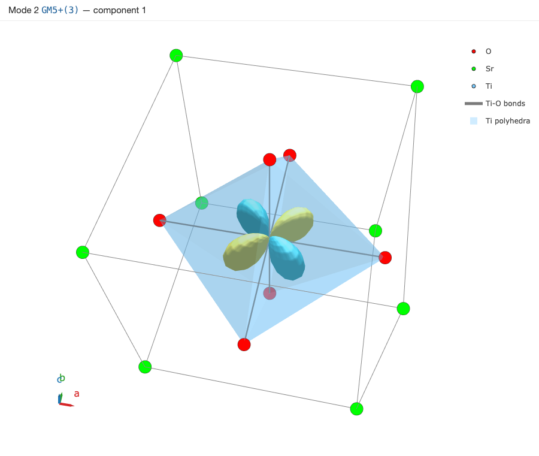 $t_{2g}$：GM5+（3重）の1つ，$d_{xy}$ |
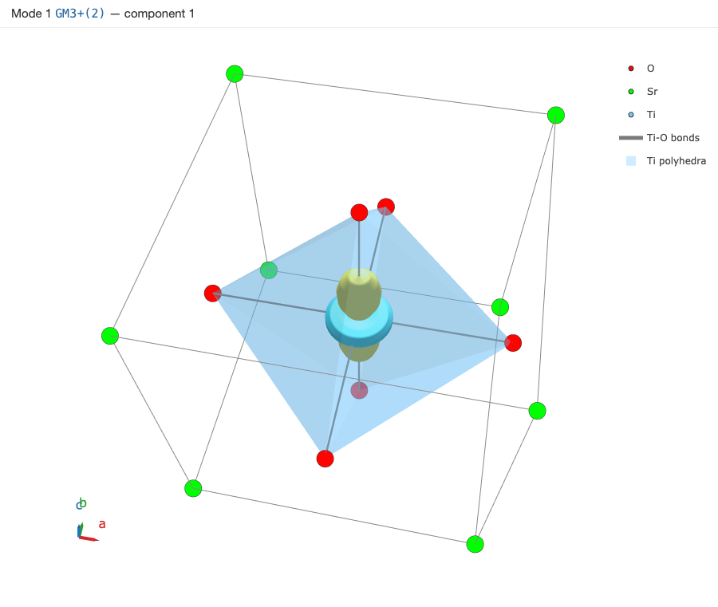 $e_g$：GM3+（2重）の1つ，$d_{3z^2-r^2}$ |
|---|---|---|
| $X$ $(\tfrac12,0,0)$：2胞．右の胞は，黄とシアンが左の胞と入れ替わる | 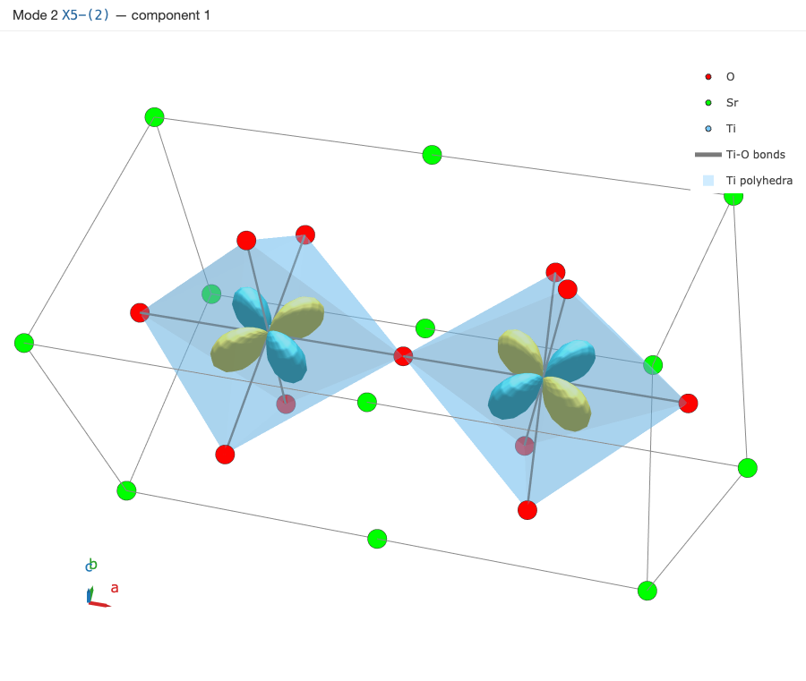 $t_{2g}$：X5−（2重），$d_{xy}$（$d_{xz}$ と対） |
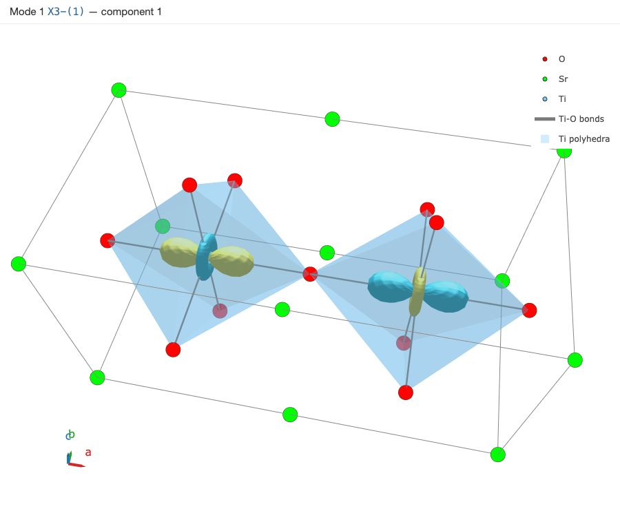 $e_g$：X3−（1重），$d_{3x^2-r^2}$（葉が $\kk$ の向き $x$ に伸びる） |
| $X$（続き）：$\Gamma$–$X$ で平らな枝の状態 | 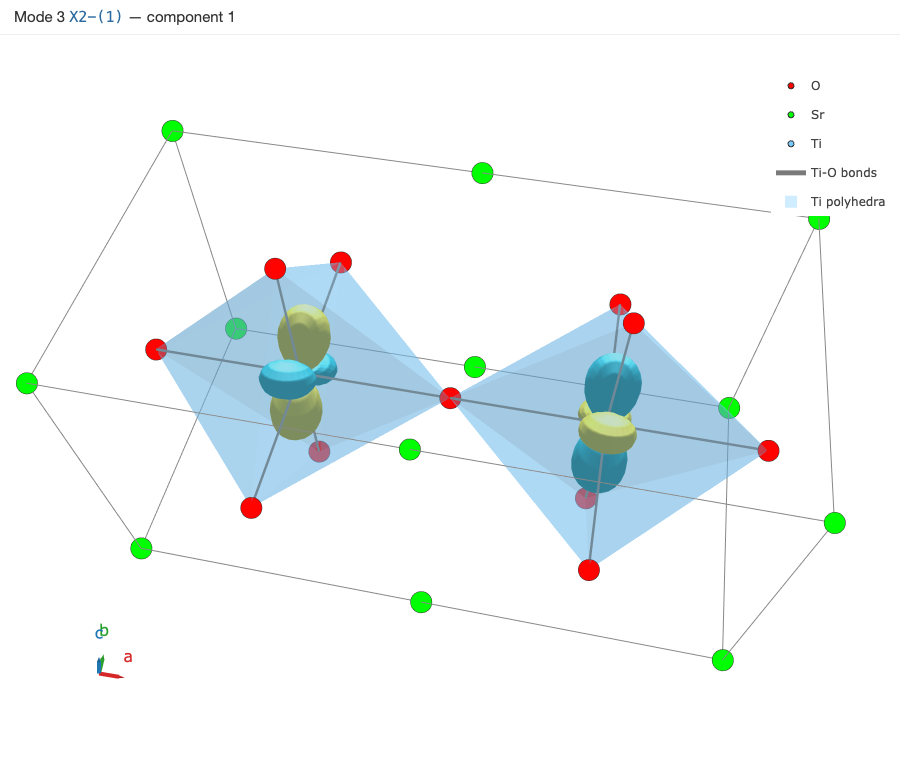 $t_{2g}$：X2−（1重），$d_{yz}$（ほとんど平らな枝） |
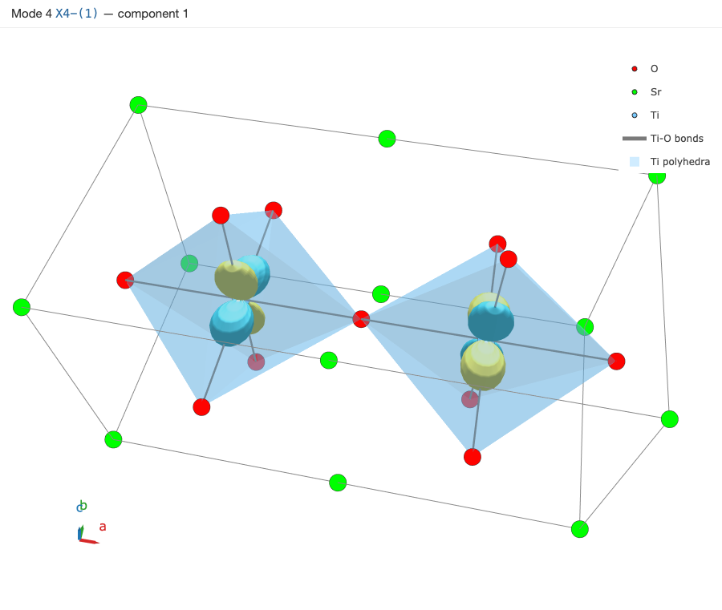 $e_g$：X4−（1重），$d_{z^2-y^2}$（平らな枝） |
| $M$ $(\tfrac12,\tfrac12,0)$：4胞．$xy$ 面で，隣り合う胞の色が入れ替わる（市松） | 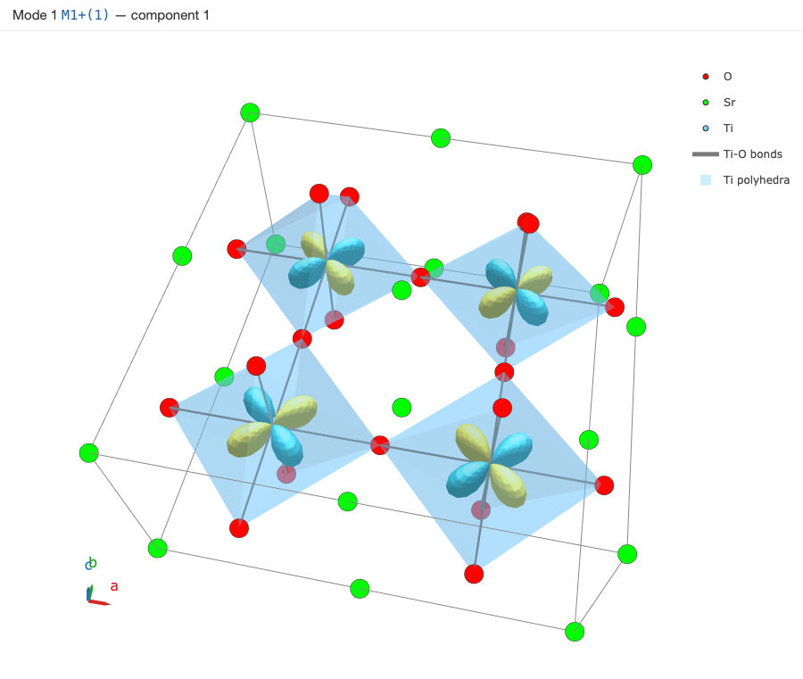 $t_{2g}$：M1+（1重），$d_{xy}$ |
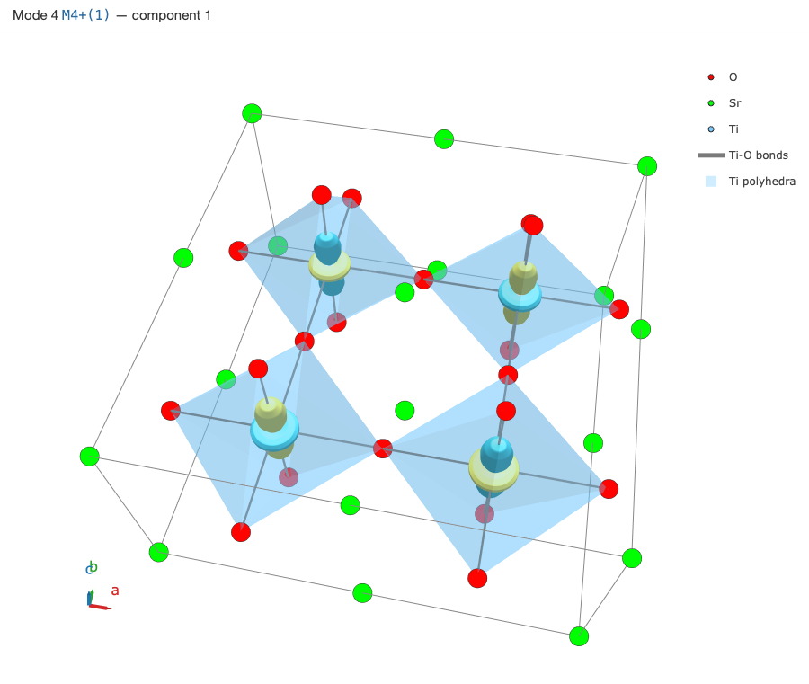 $e_g$：M4+（1重），$d_{3z^2-r^2}$ |
| $R$ $(\tfrac12,\tfrac12,\tfrac12)$：8胞．3方向とも隣と反転する（3次元の市松） | 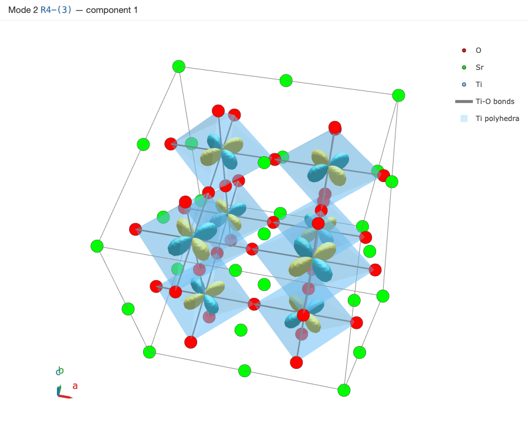 $t_{2g}$：R4−（3重）の1つ，$d_{xy}$ |
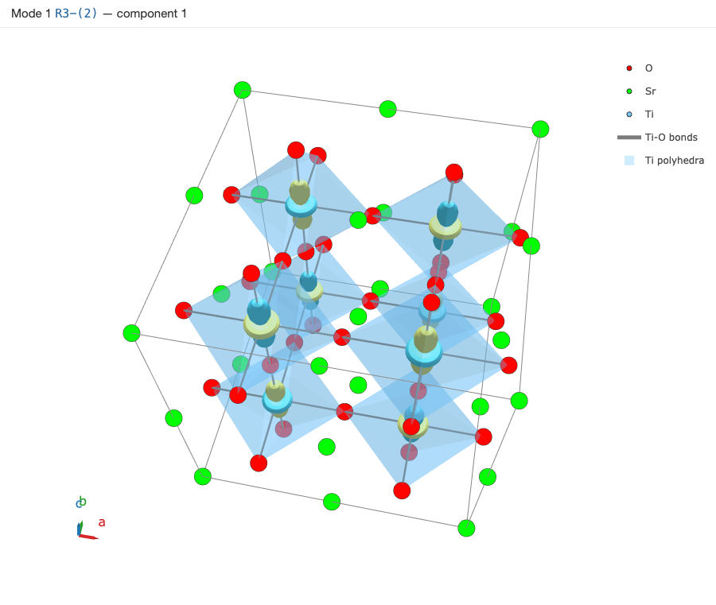 $e_g$：R3−（2重）の1つ，$d_{3z^2-r^2}$ |
表C.5 から読み取ってほしいのは次の3点である．(1) 1つの画面の中では，どの胞にも同じ形（スタンプ）が押され，違うのは胞ごとの符号だけである（Bloch の定理）．(2) 胞の数と反転する方向は図C.4 と同じである．(3) $X$ では $\kk$ の向き（$x$ 軸）が特別な軸になるので，$t_{2g}$ が $d_{yz}$（1重）と $(d_{xy},d_{xz})$（2重）に分かれる．これが図C.9 の「2本＋1本」につながる（C.6.5）．$M$，$R$ の画面は葉が重なるので，回して見るとよい．
C.6.3 $\mathrm{Ti}\ d_{xy}$ と $\mathrm{O}\ p_y$ の重なり：$\Gamma$ で打ち消し，$X$ で強め合う
$\mathrm{Ti}$ の $d_{xy}$ と，$x$ 方向にある $\mathrm{O_x}$ の $p_y$ 軌道（結合に垂直な $\pi$ 型）が混ざるかどうかを調べる．C.5.1 の3ステップをそのまま使う（向き合う葉の符号を読む → Bloch の位相を掛ける → 同符号か異符号か）．向き合う葉が同符号ならその組の重なりは $+$（結合的），異符号なら $-$（反結合的）とする．ただし，ここで判定するのは，隣の軌道との結合・反結合ではなく，$\mathrm{Ti}$ の $d$ と $\mathrm{O}$ の $p$ の重なりを足したら，強まるか，打ち消し合うかである．図C.8 に，$xy$ 断面（$z=\tfrac12$）で見た重なりを示す．
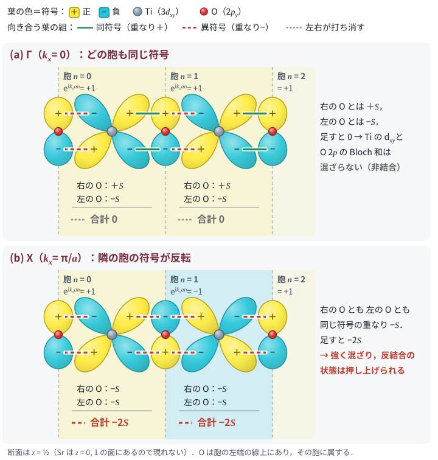
図C.8 を読む．$\mathrm{Ti}$ の右にある $\mathrm{O}$ の $p_y$ の $+$ 葉は $d_{xy}$ の第1象限の $+$ 葉と向き合い，重なりは $+S$．左にある $\mathrm{O}$ の $p_y$ の $+$ 葉は第2象限の $-$ 葉と向き合い，重なりは $-S$ である．右と左で符号が逆になる．この符号反転が，この付録の核心である．次に，これを式で確かめる．
導出：$d_{xy}$ と $\mathrm{O_x}$ の $p_y$ の Bloch 和の行列要素
$\mathrm{Ti}$（$\RR=\bm0$ の胞）の $d_{xy}$ と，$\mathrm{O_x}$ の $p_y$ との飛び移りを定義する．$\mathrm{Ti}$ の左（$-x$ 側）の $\mathrm{O_x}$ $(0,\tfrac12,\tfrac12)$ は同じ胞に属し，行列要素を $t_-$ とおく．右（$+x$ 側）の $\mathrm{O_x}$ $(1,\tfrac12,\tfrac12)$ は $\RR=\aa_1$ の胞に属し，行列要素を $t_+$ とおく．
ステップ1：$t_-=-t_+$．$\mathrm{Ti}$ の左右の $\mathrm{O_x}$ は，$\mathrm{Ti}$ を通る面（$x\to-x$）の鏡像の位置にある．この鏡映で，$p_y$ は形を変えないが，$d_{xy}$ は符号が反転する（$xy\to-xy$）．だから，右の $\mathrm{O}$ との飛び移りは，左の $\mathrm{O}$ との飛び移りの $-1$ 倍になる：$t_+=-t_-$（図C.8 の $+S$ と $-S$）．（群論の読者向けには，鏡映 $\hat M$ が $\Ham$ と可換で $\hat M^2=1$ なので $\bra{\hat Mf}\Ham\ket{g}=\bra{f}\Ham\ket{\hat Mg}$ が成り立つ，という言い方になる．）
ステップ2：Bloch 和にする．Bloch 和どうしの行列要素は $H_{dp}(\kk)=\sum_{\RR}\ee^{\ii\kk\cdot\RR}\bra{d,\bm0}\Ham\ket{p,\RR}$ で与えられる．$\RR=\bm0$ の項が $t_-$，$\RR=\aa_1$ の項が $t_+\ee^{\ii k_xa}$ で，ほかの胞の $\mathrm{O_x}$ は $\mathrm{Ti}$ から遠く無視する．$t_-=-t_+$ を使うと
（最後の等号は $\ee^{\ii\theta}-1=\ee^{\ii\theta/2}(\ee^{\ii\theta/2}-\ee^{-\ii\theta/2})=2\ii\,\ee^{\ii\theta/2}\sin(\theta/2)$ による．）大きさは $\abs{H_{dp}}=2\abs{t_+}\abs{\sin(k_xa/2)}$ である．$\Gamma$（$k_x=0$）では行列要素が 0．$X$（$k_x=\pi/a$）では最大値 $2\abs{t_+}$ になる．
ステップ3：図C.8 との対応．飛び移り積分 $t$ は，向き合う葉の重なり $S$ にほぼ比例し，比例係数は負である（$t\approx-KS$，$K>0$．C.4 で，同符号の隣の $s$ 軌道が $t<0$ だったのと同じ）．効くのは，左右の $\mathrm{O}$ で $S$ の符号が逆なら $t$ の符号も逆になる，という点だけである．式 \eqref{eq:C-hdp} は $S(\ee^{\ii k_xa}-1)$ に比例し，図C.8 の合計（$\Gamma$ で $S-S=0$，$X$ で $-S-S=-2S$）と一致する．Slater–Koster の記号では $t_+$ は $\pm V_{pd\pi}$（符号は約束による）で，大きさ $2\abs{V_{pd\pi}}\abs{\sin(k_xa/2)}$ は変わらない．
ほかの $d$–$p$ の組も同じ形になる．$\mathrm{Ti}$ から $j$ 方向にある $\mathrm{O_j}$ との飛び移りは，$\mathrm{Ti}$ の左右（$\pm j$ 側）で符号が逆なので，因子 $(\ee^{\ii k_ja}-1)$ をもつ．したがって，$\Gamma$（$\kk=0$）では $\mathrm{Ti}\ 3d$ と $\mathrm{O}\ 2p$ の間のすべての行列要素が 0 になり，$\mathrm{O}\ 2p$ 成分 0 の純粋な $\mathrm{Ti}\ 3d$ の状態が残る．これが伝導帯の底が $\Gamma$ にある理由の出発点である．PBE の計算でも，$\Gamma$ の $t_{2g}$（$1.340$ eV）の $\mathrm{O}\ 2p$ の重みは 0.000 である．
（読み飛ばしてよい）群論の言い方：$\Gamma$ で混ざれない理由は反転の偶奇
$\mathrm{Ti}$ を中心とする反転で，$\mathrm{Ti}\ 3d$ は偶（$g$）である．$\mathrm{O_x}$ の $p_y$ の Bloch 和は，反転で胞 $\RR$ の $\mathrm{O_x}$ が胞 $\aa_1-\RR$ の $\mathrm{O_x}$ に移り $p_y\to-p_y$ となるので，$\kk\equiv-\kk$ の点では固有値 $-\ee^{\ii k_xa}$ をもつ．$\Gamma$ では $-1$（奇）で，偶の $d$ と混ざれない（第10章 §10.4 の選択則と同じ論法）．$X$ では $+1$（偶）で混ざれる．$\kk$ の位相因子が反転の偶奇を入れ替える，というのが式 \eqref{eq:C-hdp} の $(\ee^{\ii k_xa}-1)$ の群論での読み方である．
C.6.4 $d_{xy}$ 的なバンドの式
鏡映の偶奇を調べると，$d_{xy}$ は $\mathrm{O_x}$ の $p_y$ と $\mathrm{O_y}$ の $p_x$ の2つの Bloch 和とだけ結合する（$\mathrm{O_z}$ のどの $p$ とも，$\mathrm{O_x}$ の $p_x$，$p_z$ とも行列要素は 0）．そのため2準位問題になり，$\mathrm{O}$ どうしの飛び移りを無視すれば，エネルギーは次の閉じた式で書ける．導出は下の囲みにある（読み飛ばしてよい）．
ここで $\Delta=\epsilon_{t2g}-\epsilon_p>0$，$t_\pi=\abs{t_+}$ である．$+$ 側（$E^+$）が $d$ 的な反結合状態（伝導帯），$-$ 側が $\mathrm{O}\ 2p$ 的な結合状態である．$\Gamma$ では $\sin^2$ がすべて 0 なので $E^+=\epsilon_{t2g}$（混ざらず，元の準位のまま）．$\kk$ が $\Gamma$ から離れると $\sin^2$ の項が正で増え，$E^+$ は上へ押し上げられる．式に $k_z$ は現れない：$d_{xy}$ は $\mathrm{O_z}$ のどの $p$ とも対称性で結合できず，$z$ 方向への飛び移りの経路がないためである．$d_{yz}$，$d_{zx}$ 的なバンドは，添字を巡回的に入れ替えればよい．
導出：式 \eqref{eq:C-dxyband}（読み飛ばしてよい．結論は式 \eqref{eq:C-dxyband} だけ）
$d_{xy}$ の Bloch 和 $\ket{d}$ のエネルギーを $\epsilon_{t2g}$（$\mathrm{O}\ 2p$ と混ざる前の準位），$\mathrm{O_x}$ の $p_y$ と $\mathrm{O_y}$ の $p_x$ の Bloch 和 $\ket{\chi_x}$，$\ket{\chi_y}$ のエネルギーを $\epsilon_p$ とする（$\chi_x$，$\chi_y$ の間の行列要素は，$\mathrm{O}$ どうしの飛び移りを無視して 0）．$h_x=\bra{\chi_x}\Ham\ket{d}$，$h_y=\bra{\chi_y}\Ham\ket{d}$ は C.6.3 の $H_{dp}$ の複素共役で，$\abs{h_x}=\abs{t_+}\abs{\ee^{\ii k_xa}-1}$ などである．そこで $\ket{b}=(h_x\ket{\chi_x}+h_y\ket{\chi_y})/W$，$\ket{n}=(-h_y^*\ket{\chi_x}+h_x^*\ket{\chi_y})/W$，$W=\sqrt{\abs{h_x}^2+\abs{h_y}^2}$ を作る．両者は直交し，$\bra{b}\Ham\ket{d}=(h_x^*h_x+h_y^*h_y)/W=W$，$\bra{n}\Ham\ket{d}=(-h_yh_x+h_xh_y)/W=0$．つまり $d_{xy}$ は $\ket{b}$ とだけ結合し，$\ket{n}$ は $\epsilon_p$ のまま残る．$\ket{d}$，$\ket{b}$ の永年方程式は
$$ (\epsilon_{t2g}-E)(\epsilon_p-E)-W^2=0\ \Longrightarrow\ E^{\pm}=\frac{\epsilon_{t2g}+\epsilon_p}{2}\pm\sqrt{\Bigl(\frac{\epsilon_{t2g}-\epsilon_p}{2}\Bigr)^2+W^2} $$であり，$\abs{\ee^{\ii\theta}-1}^2=4\sin^2(\theta/2)$ から $W^2=4t_\pi^2\bigl[\sin^2\frac{k_xa}{2}+\sin^2\frac{k_ya}{2}\bigr]$．これが式 \eqref{eq:C-dxyband} である．$\abs{\kk}a\ll1$ では $\sqrt{(\Delta/2)^2+W^2}\approx\frac\Delta2+\frac{W^2}{\Delta}$ と展開でき，$E^+_{xy}\simeq\epsilon_{t2g}+\frac{t_\pi^2a^2}{\Delta}(k_x^2+k_y^2)$ となる（$\Delta$ が大きいときの2次摂動の結果と同じ形．小さい $\kk$ でだけ使える近似）．
この展開式は $E=\hbar^2k^2/2m^*$ の形なので，$x$ 方向の有効質量 $m^*$ が読める：$\hbar^2/2m^*=t_\pi^2a^2/\Delta$．次の例題の説明用の値では $m^*\simeq0.41\,m_e$ で（$\mathrm{O}$ どうしも含めた数値対角化で $0.37\,m_e$），PBE の $\Gamma$ 近傍の当てはめ（$0.35\,m_e$）とほぼ合う．これらはこの模型・この計算の値で，実測値ではない．
例題C.4 $X$ 点での値（説明用の値を使って）
$\epsilon_{t2g}=1.52$，$\epsilon_p=-1.52$，$t_\pi=1.34$ eV として，式 \eqref{eq:C-dxyband} の $E^+_{xy}$ を $\Gamma$，$X$ で計算し，PBE の値と比べよ．（文献値ではなく，PBE のバンドに強束縛模型を最小二乗で合わせた説明用の値で，零点は PBE の VBM．$t_\pi=1.34$ eV が PBE の $\Gamma$ の $t_{2g}$ の $1.340$ eV と同じ数字なのは偶然の一致である．）
解答：$\Delta=3.04$ eV，$(\epsilon_{t2g}+\epsilon_p)/2=0$，$\Delta/2=1.52$ eV．$\Gamma$ では $E^+=1.52$ eV．$X$ $(\tfrac12,0,0)$ では $\sin^2(\pi/2)=1$，$\sin^20=0$ なので
$$ E^+_{xy}(X)=\sqrt{1.52^2+4\times1.34^2\times1}=\sqrt{2.3104+7.1824}=\sqrt{9.4928}=3.081\ \mathrm{eV} $$$\Gamma$ から $X$ までの押し上げは $3.081-1.520=1.561$ eV．PBE では $X$ の $d_{xy}$，$d_{xz}$ 的な2重の準位が $3.214$ eV で，押し上げは $3.214-1.340=1.874$ eV である．模型は PBE の傾向を定性的に再現している（$\mathrm{O}$ どうしの飛び移りや他の軌道との混ざりが，残りの差を作る）．
なお，PBE の $\Gamma$ では $e_g$（$3.598$ eV）が $t_{2g}$（$1.340$ eV）より $2.258$ eV 高い．$\Gamma$ では $\mathrm{Ti}\ 3d$ と $\mathrm{O}\ 2p$ が混ざれないので，この差は $\mathrm{Ti}\ 3d$–$\mathrm{O}\ 2p$ の模型の入力そのもので，予言できない（対称性から言えるのは，$\mathrm{O}\ 2s$ の Bloch 和が $e_g$ とは混ざれ，$t_{2g}$ とは混ざれない，という点まで）．
C.6.5 $\Gamma$–$X$ で $t_{2g}$ は「2本＋1本」に割れる
$\Gamma$ では $\mathrm{Ti}$–$\mathrm{O}$ の経路がすべて切れるので，$t_{2g}$ は $d$ 的なバンドの底になる．$\kk=(k_x,0,0)$（$\Gamma$–$X$，$\Delta$ 線）へ動かすと，式 \eqref{eq:C-dxyband} とその巡回形から次のようになる．
- $d_{xy}$ 的と $d_{zx}$ 的：どちらも $\sin^2(k_xa/2)$ が効いて分散し，同じ式なので縮退したまま（$\Delta$ 線の対称性 $C_{4v}$ の2重の表現）．
- $d_{yz}$ 的：$\sin^2(k_ya/2)+\sin^2(k_za/2)=0$ で，最近接の $\mathrm{Ti}$–$\mathrm{O}$ の模型では（$\mathrm{O}$ どうしを入れても）$\Gamma$–$X$ の全体で完全に平ら．$x$ 方向の $\mathrm{O}$ の $p$ とは対称性で重なりが 0 だからである．
つまり $\Gamma$ の3重の $t_{2g}$ は，$\Gamma$–$X$ 上で，分散する2重の枝（$d_{xy}$，$d_{zx}$）と，ほとんど分散しない1本（$d_{yz}$）に分かれる．$d_{yz}$ という名前は $\kk\parallel x$ の場合で，$\kk\parallel y$ なら平らなのは $d_{zx}$ である．表C.5 の $X$ の左の列の2枚（X5− と X2−）が，その2種類の状態である．図C.9 に PBE の $t_{2g}$ の3本を示す．
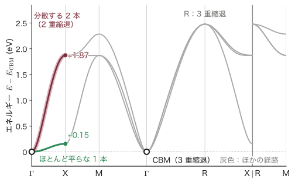
表C.6 に，PBE の $\Gamma$，$X$，$M$，$R$ での値をまとめる．
| 点 | $\mathrm{O}\ 2p$ の最高の準位 | $\mathrm{Ti}\ 3d$ $t_{2g}$ 的な準位（低い順） |
|---|---|---|
| $\Gamma$ | $-0.292$（3重） | $+1.340$（3重，$\mathrm{Ti}\ 3d$ 0.906，$\mathrm{O}\ 2p$ 0.000） |
| $X$ $(\tfrac12,0,0)$ ※ | $-0.661$（2重） | $+1.495$（1重，$d_{yz}$ 型，$\mathrm{O}\ 2p$ 0.000），$+3.214$（2重，$d_{xy}$，$d_{xz}$ 型，$\mathrm{O}\ 2p$ 0.222） |
| $M$ $(\tfrac12,\tfrac12,0)$ | $-0.105$（1重） | $+3.212$（2重，$d_{yz}$，$d_{xz}$ 型），$+3.626$（1重，$d_{xy}$ 型） |
| $R$ $(\tfrac12,\tfrac12,\tfrac12)$ | $0.000$（3重，$\mathrm{O}\ 2p$ 1.000） | $+3.819$（3重，$\mathrm{Ti}\ 3d$ 0.835，$\mathrm{O}\ 2p$ 0.156） |
※ $X$ の行は $\kk\parallel x$ の場合（SALC ビューアの $X_1=(\tfrac12,0,0)$）．CrystOD の DFT 準位ビューアの $X$ は $(0,\tfrac12,0)$ で，そこでは平らな枝が $d_{xz}$，2重の枝が $d_{xy}$，$d_{yz}$ になる．
表C.6 の読み方：$\Gamma$ の $t_{2g}$ は $\mathrm{O}\ 2p$ の重み 0 の，混ざらない状態．$X$ では，分散する2重（$\mathrm{O}\ 2p$ の重み 0.222）とほとんど動かない1本（重み 0）に割れる．$M$ では $d_{xy}$ が $x$，$y$ の2方向の $\mathrm{O}$ と結合して最も上がり，$d_{yz}$，$d_{xz}$ は1方向だけなので $X$ と同じ $3.21$ eV．$R$ では3つとも2方向と結合して縮退する．
「底はなぜ $\Gamma$ か」への答え：$\Gamma$ では左右の $\mathrm{O}$ の寄与が打ち消して $\mathrm{O}\ 2p$ と混ざらないので，$d$ 的なバンドの底になる．$\Gamma$ から離れると，隣の胞の位相がずれて打ち消しが不完全になり，少なくとも2本は押し上げられる．最近接の $\mathrm{Ti}$–$\mathrm{O}$ だけの模型では（$\mathrm{O}$ どうしを入れても），$d_{yz}$ 的な枝は $k_x$ 方向に完全に平らで，底は $\Gamma$–$X$ 線全体で同じ高さになる．PBE で底が $\Gamma$ だけになるのは，この枝がわずかに（$0.155$ eV）分散して $X$ へ向かって上がるためで，その原因は $\mathrm{Ti}$ どうしの直接の $d$–$d$ の重なりなど，より遠い相互作用にある（この付録では立ち入らない）．
「重い電子」と「軽い電子」は方向ごとに言う．$d_{xy}$ 的な枝は，この模型では $k_z$ 方向に分散しない（有効質量は無限大）が $x$，$y$ 方向には軽く，$d_{yz}$ 的な枝は $x$ 方向に重い（PBE の $\Gamma$ 近傍の当てはめで $6.6\,m_e$，分散する2重は $0.35\,m_e$）．これらはこの計算の値である．
C.6.6 価電子帯の頂上は $R$ の非結合な $\mathrm{O}\ 2p$ である
$R=(\tfrac12,\tfrac12,\tfrac12)$ では位相因子が3方向とも $-1$ になり，$\mathrm{Ti}$–$\mathrm{O}$ の行列要素の因子 $(\ee^{\ii k_ja}-1)=-2$ が最大になる．$\Gamma$ とは逆に，$\mathrm{O}\ 2p$ と $\mathrm{Ti}\ 3d$ の結合が最も強い点である．それでも $R$ に，$\mathrm{Ti}$ とまったく混ざらない $\mathrm{O}\ 2p$ が残る．数えて確かめる．
導出：$R$ で $\mathrm{Ti}\ 3d$ と結合できない $\mathrm{O}\ 2p$ の数
$R$ には $\mathrm{O}\ 2p$ の Bloch 和が9個，$\mathrm{Ti}\ 3d$ の Bloch 和が5個ある．$\Ham$ の $d$–$p$ ブロックは $5\times9$ の行列で，階数は高々5である．したがって，9個の $\mathrm{O}\ 2p$ の1次結合のうち，$\mathrm{Ti}\ 3d$ のどれとも結合しないものが少なくとも $9-5=4$ 個ある．具体的には，$d_{xy}$ は $\mathrm{O_x}$ の $p_y$ と $\mathrm{O_y}$ の $p_x$ の和に結合し（C.6.4 で，$R$ では $h_x=h_y=-2t_+$），$d_{yz}$，$d_{zx}$ も同様，$e_g$ は $\sigma$ 型の組合せに結合する．5つの $d$ が結合する $\mathrm{O}\ 2p$ の組合せは5個で，残りの4個は結合しない．
この4個は，対称性で2つのグループに分かれる（表C.7）．
| 形 | 結合できる相手 | PBE (eV) |
|---|---|---|
| $\sigma$ 型の「呼吸」$(\mathrm{O_x}p_x+\mathrm{O_y}p_y+\mathrm{O_z}p_z)/\sqrt3$（R2−，1重） | $\mathrm{Ti}\ 4s$（$3d$ とは結合しない） | $-4.62$ |
| $\sigma$ 型 $(2\mathrm{O_y}p_y-\mathrm{O_z}p_z-\mathrm{O_x}p_x)/\sqrt6$ など（R3−，2重） | $\mathrm{Ti}\ e_g$ | $-4.21$ |
| $\pi$ 型・和 $(\mathrm{O_y}p_x+\mathrm{O_x}p_y)/\sqrt2$ など（R4−，3重） | $\mathrm{Ti}\ t_{2g}$（と $\mathrm{Sr}\ p$） | $-3.78$ |
| $\pi$ 型・差 $(\mathrm{O_y}p_x-\mathrm{O_x}p_y)/\sqrt2$ など（R5−，3重） | どの原子の $s$，$p$，$d$ とも結合しない | $0.000$（VBM） |
R2− は $\mathrm{Ti}\ 3d$ とは結合しないが $\mathrm{Ti}\ 4s$ と結合できる（PBE で $\mathrm{Ti}\ s$ の重み 0.222）．したがって，$\mathrm{Ti}\ 3d$ と結合しない $\mathrm{O}\ 2p$ は4個（R2− と R5−）で，そのうち，どの $\mathrm{Ti}$ 軌道とも混ざらない完全な非結合は $\pi$ 型の3個（R5−）である．この3重縮退した状態が価電子帯の頂上（VBM）で，PBE では $\mathrm{O}\ 2p$ の重みが $1.000$（$\mathrm{Ti}$ と $\mathrm{Sr}$ は 0）である．
この状態の形を，図C.10(b) で見よう．成分1は $(\mathrm{O_y}p_x-\mathrm{O_x}p_y)/\sqrt2$ で，$\mathrm{Ti}$ を囲む $xy$ 面内の4つの $\mathrm{O}$ が，結合軸に垂直な $p$（$\pi$ 型）を，$\mathrm{Ti}$ のまわりを回る向きに並べた形をしている（全体の符号は任意なので，逆回りでもよい）．隣の八面体（Bloch 位相 $-1$）では逆回りになり，3方向とも交互に反転する．$d_{xy}$ は $\mathrm{O_x}p_y$ と $\mathrm{O_y}p_x$ の和と結合するので，この差の形とは打ち消し合って結合しない．
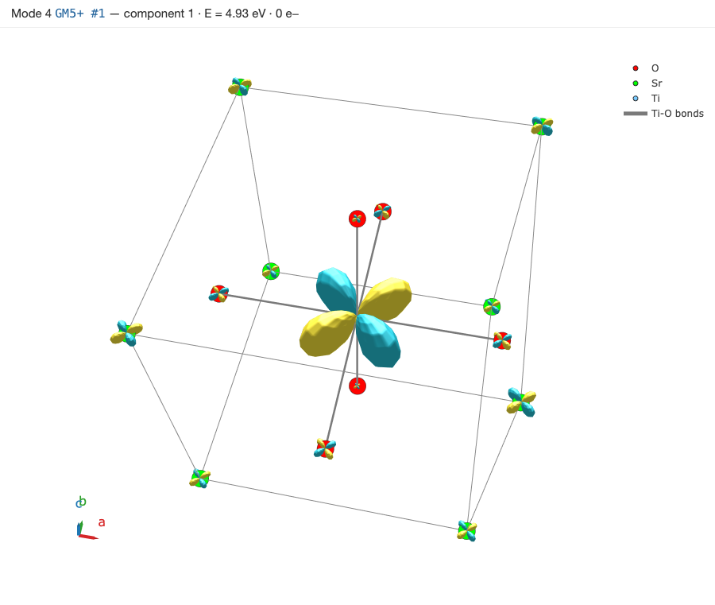
(a) $\Gamma$ の伝導帯の底（実際の DFT の波動関数）
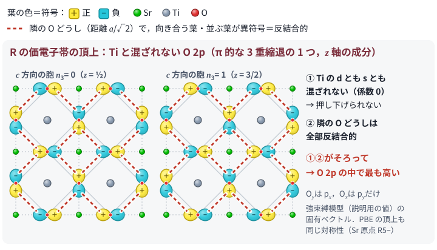
(b) $R$ の価電子帯の頂上（模式図）
以上から，$R$ の価電子帯の頂上は，2つの条件がそろった状態である．(i) 隣の $\mathrm{O}$ どうし（距離 $a/\sqrt2$）が全部反結合的に並ぶ組合せなので（行列要素の数では8個，結合としては1胞あたり4本．円環状に並んだ葉が，隣の $\mathrm{O}$ との間で符号を変える），$\mathrm{O}\ 2p$ の中で最も高くなりうる．$\mathrm{O}$–$\mathrm{O}$ だけで見ると $\epsilon_p+2(V_{pp\sigma}-V_{pp\pi})=\epsilon_p+1.32$ eV（強束縛の説明用の値 $V_{pp\sigma}=0.57$，$V_{pp\pi}=-0.09$ eV．8個の行列要素が $+0.165$ eV ずつ寄与する）．(ii) しかも $\mathrm{Ti}$ のどの軌道とも混ざれない（係数 0）ので，$\mathrm{Ti}$ に押し下げられない．$\mathrm{O}$–$\mathrm{O}$ だけで見れば同じ高さになる別の組（$\mathrm{Sr}$ 原点 $R_3^-$，$e_g$ 型）は，$\mathrm{Ti}$ の $e_g$ と混ざって押し下げられ，頂上には残らない．こうして残るのが $\pi$ 的な3重縮退（$\mathrm{Sr}$ 原点の CrystOD で $R_5^-$）である．
補足：$R$ と $M$ の差
最近接だけの模型では $M$ にも同じ高さの状態があり（$M$–$R$ 線で頂上が平ら），$R$ が $M$ より約 $0.1$ eV（PBE で $0.105$ eV）高いのは，より遠い相互作用の効果である．この付録では，その内訳までは調べていない．
$R$ の頂上を CrystOD で回して見る
図C.10(a) と同じ，実際の PBE の波動関数は，CrystOD の準位ビューアで回して見られる：$R$（頂上は $\mathrm{O}\ 2p$ の葉が多数並ぶ 3D 図になる），$\Gamma$，$X$，$M$（このビューアの $X$ は $(0,\tfrac12,0)$）．PBE の SCF をやり直して作るコマンドは crystod --visualize --pyscf -c 221_PPOSCAR_SrTiO3 --chk SrTiO3_new.chk --ke-cutoff 80 --kmesh 2 2 2 --max-l 2 --xc pbe --oxidation O=-2 Sr=+2 Ti=+4 --bond Ti O 2.5 --real-coefficient（CrystOD 0.4.5，約1分．--diagonalize --valence-only --window -1.5 12 を付けた）．
C.6.7 $\mathrm{SrTiO_3}$ のギャップは「非結合」と「非結合」の間にある
物理的意味：間接ギャップの正体
$\mathrm{SrTiO_3}$ のバンドギャップは，次の2つの非結合な状態の間にできている．伝導帯の底は $\Gamma$ の $\mathrm{Ti}\ t_{2g}$（$\mathrm{O}\ 2p$ の成分 0，全胞同符号）で，価電子帯の頂上は $R$ の $\mathrm{O}\ 2p$（$\mathrm{Ti}$ の成分 0，回る向きに並ぶ $\pi$ 型の3重縮退）である．
$d$–$p$ の混成は，結合的な状態を下へ，反結合的な状態を上へ押す．$\Gamma$ では $d$–$p$ の行列要素がすべて 0 なので，$\Gamma$ の $\mathrm{Ti}\ t_{2g}$（伝導帯の底）も，$\mathrm{O}\ 2p$ の状態も混成の移動を受けない．価電子帯の頂上（$R$）は，$\mathrm{Ti}$ とも $\mathrm{Sr}$ とも結合の相手がなく，$d$ による押し下げを受けない $\mathrm{O}\ 2p$ が，隣の $\mathrm{O}$ どうしで最も反結合的に並んだ状態である．この2つが $\Gamma$ と $R$ という別々の点にあるので，ギャップは間接ギャップ（$R\to\Gamma$）である．
PBE（この計算）の間接ギャップは $1.340$ eV，直接ギャップ（$\Gamma$–$\Gamma$）は $1.632$ eV で，実験（間接 $3.25$ eV，直接 $3.75$ eV，K. van Benthem, C. Elsässer, R. H. French, J. Appl. Phys. 90, 6156 (2001)）の約 $41\,\%$，$44\,\%$ である．この値は，小さな基底（DZVP）と粗い $\kk$ メッシュによる，この計算での値で，PBE の値は計算条件で変わる．いずれにせよ実験より大幅に小さいことは共通である．
C.7 フォノンの Bloch 状態 — 原子変位の位相
この節で分かること：格子振動（フォノン）の状態も，電子の Bloch 状態とまったく同じ言葉で書ける．「胞の中のスタンプ」が原子変位のパターン（固有ベクトル），「胞ごとの位相」が $\ee^{\ii\qq\cdot\RR}$ である．$\mathrm{SrTiO_3}$ では，$\Gamma$ は全胞が同じ動き，$X$，$M$，$R$ は隣の胞が逆向きの動きになり，$M$ と $R$ の最低のモードは酸素八面体の回転である．
C.7.1 電子とフォノンの対応
第13章 §13.6 で，2原子鎖のフォノンを平面波 $\ee^{\ii(kna-\omega t)}$ の形に書いた．3次元の結晶で，胞 $\RR$ にある原子 $\kappa$（胞の中の $\kappa$ 番目の原子）の変位は，次の形に書ける．
$A$ は振幅，$M_\kappa$ は原子 $\kappa$ の質量である．$\bm e_\kappa(\qq)$ は，質量で重みをつけた動力学行列の固有ベクトルで，$\bm e_\kappa/\sqrt{M_\kappa}$ が，胞の中の $\kappa$ 番目の原子の変位の向きと相対的な大きさ（胞の中のスタンプ）を表す．スタンプは $\kappa$ ごとに異なり，$\qq$ とモード $n$ ごとに決まるが，1つのモードの中では胞 $\RR$ に依らない．つまり，胞の中の模様（変位 $\bm e_\kappa/\sqrt{M_\kappa}$）$\times$ 胞ごとの位相（$\ee^{\ii\qq\cdot\RR}$）である．これは電子の Bloch 和（式 \eqref{eq:C-blochsum}）と同じ構造をしている．表C.8 に対応をまとめる．
| 電子（Bloch 状態） | フォノン | |
|---|---|---|
| 胞ごとの位相（時計の針） | $\ee^{\ii\kk\cdot\RR}$ | $\ee^{\ii\qq\cdot\RR}$（$\qq$ は波数ベクトル） |
| 胞の中のスタンプ | 軌道の形（$s$，$p$，$d$ …）の係数 | 変位 $\bm e_\kappa/\sqrt{M_\kappa}$（原子 $\kappa$ の変位の向きと大きさ） |
| 1つの点の状態の数 | バンドごとに1つ（縮退あり） | $3\times5=15$ モード（5原子 $\times$ 3方向） |
| 実数にとれる点 | $\Gamma$，$X$，$M$，$R$（定在波） | $\Gamma$，$X$，$M$，$R$（定在波） |
| 隣どうしの関係 | 結合的／反結合的 | 隣の原子が同じ向き／逆向きに動く |
| 縦軸 | エネルギー $E_n(\kk)$ | 振動数 $\omega_n(\qq)$ |
$\Gamma$ の15モードのうち，3つは音響モード（一様な並進），残りの12が光学モードである（立方対称の既約表現による分類は第13章）．
この節の計算条件と数値の読み方
この節のフォノンの数値は，機械学習ポテンシャル（MLIP．r2SCAN のデータで微調整された MACE のモデル MACE-matpes-r2scan-omat-ft．I. Batatia et al., Advances in Neural Information Processing Systems 35 (2022)）を望月研究室の macer で使い，phonopy で計算した0 K の調和近似の結果である．$2\times2\times2$ 超胞（40原子），変位 $0.01$ Å，非解析項（LO–TO 分裂）なし．格子定数はこの計算で緩和した $a=3.8995$ Å（実験の室温値は $3.905$ Å より $0.14\,\%$ 小さい）．$2\times2\times2$ 超胞は $\Gamma$，$X$，$M$，$R$ にちょうど整合するので，これら4点の振動数は補間を含まない（超胞の力定数から直接出る）．図C.11 の線の途中は補間である．この MLIP は DFT でも実験でもないので，数値は「この計算では」と読むこと．
C.7.2 $\Gamma$：全胞が同じ動き
$\Gamma$ では $\qq=0$ で，位相因子はどの胞でも 1 である．15モードのうち，3つは音響モードで，全原子が同じ向き・同じ大きさで動く（結晶全体の一様な並進，振動数 0）．残りが光学モードで，胞の中の原子が互いにずれる動きである．光学モードのうち，最も振動数が低いのが極性モード（$T_{1u}$，3重縮退，$2.66$ THz $=88.9\ \mathrm{cm^{-1}}$）である．$z$ 偏極の成分では，胞の中の変位が（最大の原子変位を 1 に規格化して）次のようになる．
- $\mathrm{Sr}$：$+0.27$，$\mathrm{Ti}$：$+0.49$．
- $\mathrm{O}$：$-0.94$（$\mathrm{Ti}$–$\mathrm{O}$ 結合が $z$ に沿う $\mathrm{O}$），$-1.00$（残りの2個の $\mathrm{O}$）．
つまり陽イオン（$\mathrm{Sr}$，$\mathrm{Ti}$）が同じ向きに，酸素6個が逆向きに動く．このパターン（スタンプ）が，すべての胞で同じ向きに繰り返される（図C.12(c)）．正負のイオンが逆に動くので，各胞に電気双極子が生じ，赤外活性になる（第10章，第13章）．パターンは，$\mathrm{Ti}$ 対 $\mathrm{O_6}$（Slater 型）が主で，$\mathrm{Sr}$ 対 $\mathrm{TiO_3}$（Last 型）をわずかに含む（Last : Slater : Axe $=0.27:0.74:0.04$，3つは直交しないので係数は目安）．$T_{1u}$ は15モード中に4回現れるので，この混ざり方は対称性では決まらず，力定数（この MLIP）で決まる．
この極性モードは，第19章 §19.6 の「ソフトモード」に当たる．実験の $\mathrm{SrTiO_3}$ では，温度を下げるとこのモードが大きく軟化するが，ゼロ点振動のために凍結せず，絶対零度でも強誘電にならない（量子常誘電体，第19章 例題19.8）．一方，この付録の0 K の調和近似の計算では，振動数は正（$2.66$ THz）で，立方構造は強誘電的には不安定ではない．計算の振動数は力定数の作り方で約 $0.01$ THz 動くので，細かい値は信用しすぎないこと．
C.7.3 $X$，$M$，$R$：隣の胞が逆向き，単位胞が倍になる
$X$，$M$，$R$ では位相因子が $\pm1$ で，隣の胞で変位が逆向きになる方向がある．位相の模様は図C.4 と同じで，$X$ は $x$ 方向に，$M$ は $xy$ 面内に，$R$ は3方向に交互に反転する．そのため，この模様を凍結（実際に原子がその変位の位置で止まること）させると，単位胞が元の2倍になる（C.3 節で見た，どの点でも基本胞の体積が $2a^3$ になること）．
$\mathrm{SrTiO_3}$ では，$X$ の最低のモード（2重縮退，$3.15$ THz）は，$\mathrm{Sr}$ だけが（運動エネルギーの $99.98\,\%$），$\kk$ に垂直な向きに，$x$ 方向に1胞ごとに逆向きに揺れる横波である．$\mathrm{Ti}$ は対称性で動かない．$M$ と $R$ の最低のモードは，酸素八面体の回転である．
導出：八面体は頂点を共有するので，隣どうしは必ず逆回りになる
$\mathrm{TiO_6}$ 八面体が頂点の $\mathrm{O}$ を共有して並んでいる．$xy$ 面内で，$\mathrm{Ti}$ を原点とする八面体Aと，$\mathrm{Ti}$ が $(a,0,0)$ にある隣の八面体Bを考える．両者は $\mathrm{O}$ $(a/2,0,0)$ を共有している．各八面体が $z$ 軸のまわりに，小さな角度 $\theta$（反時計回りを正）だけ剛体回転するとき，$\mathrm{Ti}$ から見て位置 $\bm r$ にある $\mathrm{O}$ の変位は $\delta\bm r=\theta\,\hat{\bm z}\times\bm r=\theta\,(-y,x,0)$ である．
$$ \text{Aの回転 }\theta_A:\quad \bm r=\Bigl(\tfrac a2,0,0\Bigr)\ \Rightarrow\ \delta\bm r=\Bigl(0,\ \tfrac a2\theta_A,\ 0\Bigr) $$ $$ \text{Bの回転 }\theta_B:\quad \bm r=\Bigl(-\tfrac a2,0,0\Bigr)\ \Rightarrow\ \delta\bm r=\Bigl(0,\ -\tfrac a2\theta_B,\ 0\Bigr) $$（共有された $\mathrm{O}$ は，Bの中心から見ると $\bm r=(-a/2,0,0)$ の位置にある．）同じ原子の変位は1つしかないので，両者が等しくなければならない：$\tfrac a2\theta_A=-\tfrac a2\theta_B$，すなわち $\theta_B=-\theta_A$．$y$ 方向の隣についても同様なので，同じ層（$ab$ 面）の中で，隣どうしは必ず逆回転する．これは，位相因子が $a$ 方向にも $b$ 方向にも $-1$ になる，$k_1=k_2=\tfrac12$ にほかならない．
$c$ 方向では，層と層の間をつなぐ頂点の $\mathrm{O}$（$\mathrm{Ti}$ の真上と真下にある $\mathrm{O}$）は $z$ 軸上にあるので，$z$ 軸まわりの回転では動かない．したがって，層どうしは互いに独立に回転の向きを選べる．$c$ 方向に同じ向きに積めば $k_3=0$（$M$ 点），逆向きに積めば $k_3=\tfrac12$（$R$ 点）になる．これを Glazer 記号で，$M$ は $a^0a^0c^+$，$R$ は $a^0a^0c^-$ と書く（$a^0a^0$ は $a$，$b$ 軸まわりに回転しないこと，$c^\pm$ は $c$ 軸まわりに隣の層が同じ向き（$+$）か逆向き（$-$）かを表す）．
表C.9 に，この付録で扱う5つのモードをまとめる．
| モード | $\qq$（分率） | 振動数 THz（$\mathrm{cm^{-1}}$） | 縮退 | 胞の中のスタンプ | 胞ごとの位相 |
|---|---|---|---|---|---|
| $\Gamma$ 音響 | $(0,0,0)$ | $0$ | 3 | 全原子が同じ向き（一様な並進） | 全胞 $+1$ |
| $\Gamma$ 極性（最低の光学，$T_{1u}$） | $(0,0,0)$ | $2.66$（$88.9$） | 3 | $\mathrm{Sr}$ $+0.27$，$\mathrm{Ti}$ $+0.49$，$\mathrm{O}$ $-0.94\sim-1.00$ | 全胞 $+1$ |
| $X$ 最低（$\mathrm{Sr}$ の横波） | $(\tfrac12,0,0)$ | $3.15$（$105.2$） | 2 | $\mathrm{Sr}$ だけ（運動エネルギー $99.98\,\%$） | $(-1)^{n_1}$ |
| $M$ 八面体の回転 $a^0a^0c^+$ | $(\tfrac12,\tfrac12,0)$ | $1.72$（$57.5$） | 1 | $\mathrm{O}$ だけが動く | $(-1)^{n_1+n_2}$ |
| $R$ 八面体の回転 $a^0a^0c^-$ | $(\tfrac12,\tfrac12,\tfrac12)$ | $-1.09$（$-36.3$）虚数 | 3 | $\mathrm{O}$ だけが動く | $(-1)^{n_1+n_2+n_3}$ |
回転モードは対称性だけで決まる（15モード中に1回しか現れない）ので，$\mathrm{Sr}$ と $\mathrm{Ti}$ は動かず，酸素八面体が剛体のように回る．$\mathrm{O}$ の最大変位 $0.1$ Å は，回転角で約 $2.9^\circ$ に相当する（小振幅の線形近似）．$R$ の振動数が負なのは，虚数振動数を負の値で表しているためで，$\omega^2<0$（立方構造がこの変位の方向にポテンシャルの鞍点であること）を意味する．
C.7.4 フォノンの分散
図C.11 に，この MLIP の $\mathrm{SrTiO_3}$ のフォノン分散を，電子バンドと同じ経路で示す．
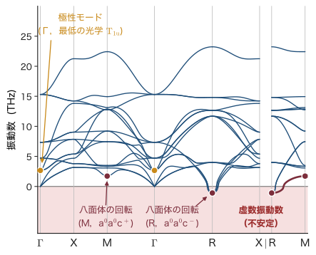
図C.11 で $R$ から $M$ に向かう最低の分枝（臙脂の太線）は，$R$ の回転（層を逆向きに積む）から $M$ の回転（層を同じ向きに積む）へ，$c$ 方向の位相だけを $\pi$ から $0$ へ連続的に変えていく枝である．$a$，$b$ 方向（$k_1=k_2=\tfrac12$）の「隣どうしは逆回り」という構造は，この枝のどこでも変わらない．$R$ のまわりで振動数が虚数になるのは，$R$ から $M$ へ約 $36\,\%$，$\Gamma$ から $R$ へ $R$ 側の約 $8\,\%$，$R$ から $X$ へ $R$ 側の約 $12\,\%$ の範囲である．
C.7.5 八面体の回転と極性モードを絵で見る
図C.12 は，固有ベクトルから描いた原子変位の模様である．(a)，(b) は酸素八面体の回転を $c$ 方向から見た図で，$c$ 方向に重なる2つの層（$z=\tfrac12$ と $z=\tfrac32$）を並べた．
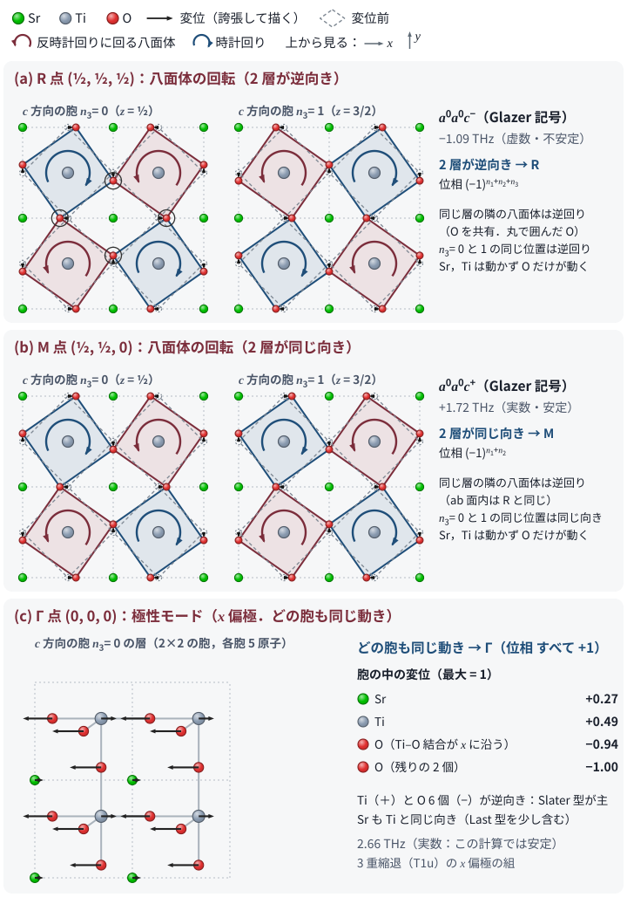
図C.12 の(a)と(b)は，上の層（右）が下の層（左）と同じ向きか，逆向きかだけが違う．(a) の $R$ では，左の層の左上の八面体が時計回り（青）なら，右の層の同じ位置の八面体は反時計回り（赤）である．(b) の $M$ では，両方の層で同じ位置の八面体は同じ向きである．この違いが，$c$ 方向の位相因子が $-1$（$R$）か $+1$（$M$）かの違いに対応する．(a) の丸で囲んだ4つの $\mathrm{O}$ は，2つの八面体に共有されている頂点で，隣どうしが逆回りでないとそこの動きがつじつまが合わない（上の導出）ことを示している．(c) は $\Gamma$ で，どの胞でも同じ向き（$\mathrm{Ti}$ が右，$\mathrm{O}$ が左）に動くので，位相はすべて $+1$ である．
C.7.6 $105$ K の構造相転移と $I4/mcm$
実験の $\mathrm{SrTiO_3}$ は，約 $105$ K で立方晶 $Pm\bar3m$ から正方晶 $I4/mcm$ へ構造相転移する．これは，$R$ 点の酸素八面体の回転モード（$a^0a^0c^-$）が凍結したものである．この付録の計算（MLIP，0 K の調和近似）でも，虚数振動数になるのは $R$ の最低の3重縮退モード（$-1.09$ THz）だけで，$M$ の回転（$a^0a^0c^+$，$1.72$ THz）は安定である．CrystOD の crystod-phonon --subgroup で，$R$ 点の既約表現（R5−，Sr 原点）が $(0,0,a)$ の向き（$z$ 軸まわりの回転）に凍結したときの対称性を調べると，$I4/mcm$（No. 140）になる（$(a,a,a)$ なら $R\bar3c$，$(0,a,a)$ なら $Imma$）．定性的に実験と合っている．
$I4/mcm$ の単位胞は $\sqrt2a\times\sqrt2a\times2a$（体積 $4a^3$）の体心格子で，基本胞の体積は $2a^3$（元の2倍）である．これは，$R$ の位相の模様（図C.4 の $R$：同符号の胞が fcc 格子をなし基本胞が $2a^3$）の周期と一致する．基本胞には $\mathrm{SrTiO_3}$ が2式量（10原子）入り，フォノン分枝は $3\times10=30$ 本になる（演習C.6）．
この計算の読み方：転移温度や回転角は出ていない
虚数振動数は「立方構造が，このポテンシャルの鞍点であること」を表すだけで，転移温度や回転角の大きさを与えない．実際の転移温度 $105$ K は，有限温度の非調和性で決まる．また，この計算は MLIP の 0 K の調和近似であり（C.7.1 の囲み），格子定数（$3.8995$ Å）や力定数への依存があるので，虚数振動数の大きさ（$-1.09$ THz）の細部は信用しすぎない．実験の回転角や，$\Gamma$ の極性モードの実験値は，この付録では扱わない．
C.7.7 電子とフォノンをつなぐ：同じ既約表現
最後に，電子とフォノンの対応を，具体的な1組で見てみよう．C.6.6 で，$R$ 点の価電子帯の頂上（$\mathrm{O}\ 2p$ の $\pi$ 型の非結合な3重縮退，$\mathrm{Sr}$ 原点で R5−）を見た．これを，C.7.3 で見た $R$ 点の八面体回転（フォノン，$\mathrm{Sr}$ 原点で R5−）と並べてみる（図C.13）．図C.10(b) と同じ模様が，フォノンでも現れる．
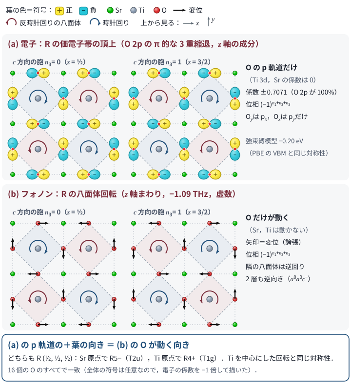
物理的意味：電子もフォノンも「スタンプ $\times$ 位相」
$R$ 点の価電子帯の頂上（$\mathrm{O}\ 2p$ の $\pi$ 型の非結合な3重縮退）は，$R$ 点の八面体回転モードと同じ既約表現である（$\mathrm{Sr}$ 原点の CrystOD の名前で R5−．原点による名前の違いは，下の補足）．理由は，$\mathrm{O}$ の $p$ 軌道を，$\mathrm{O}$ の位置に置いた「矢印」と思えばよいからである．電子の状態は「各 $\mathrm{O}$ にどちら向きの矢印（$p$ 軌道の $+$ 葉）を，どの符号で置くか」というパターンで，フォノンの状態は「各 $\mathrm{O}$ をどちらへ動かすか」というパターンである．矢印の置き方（軌道が向く方向）と動く方向が，同じ形をしている．
電子の Bloch 状態もフォノンの Bloch 状態も，「胞の中のスタンプ（$\mathrm{O}$ の $p$ 軌道の向き，または $\mathrm{O}$ の変位の向き）$\times$ 胞ごとの位相（$(-1)^{n_1+n_2+n_3}$）」という，同じ言葉で書ける．違いは，電子では「この状態にエネルギー $E$ の電子が入る」，フォノンでは「この変位パターンで原子が振動数 $\omega$ で振動する」という物理的な意味である．バンド図の横軸の1点が，状態の名前になることを，電子でもフォノンでも確かめた．
補足：既約表現の名前と原点（読み飛ばしてよい）
既約表現の名前は，原点の取り方で変わる．$\mathrm{Sr}$ 原点（CrystOD，付録B と同じ）と $\mathrm{Ti}$ 原点で，CrystOD が付ける名前を表C.10 に示す．
| 状態 | $\mathrm{Sr}$ 原点 | $\mathrm{Ti}$ 原点 |
|---|---|---|
| $R$：$\mathrm{O}\ 2p$ の価電子帯の頂上，および八面体の回転（3重） | $R_5^-$（$T_{2u}$） | $R_4^+$（$T_{1g}$） |
| $R$：$\mathrm{Ti}$ の $t_{2g}$，$e_g$ | $R_4^-$，$R_3^-$ | $R_5^+$，$R_3^+$ |
| $M$：八面体の回転 | $M_2^+$ | $M_3^+$ |
| $M$：$\mathrm{Ti}$ の $d_{xy}$ | $M_1^+$ | $M_4^+$ |
| $X$：$\mathrm{Sr}$ の横波（最低のフォノン），$\mathrm{Ti}$ の $d_{xy}$，$d_{xz}$ | $X_5^-$ | $X_5^+$ |
| $X$：$\mathrm{Ti}$ の $d_{yz}$ | $X_2^-$ | $X_4^+$ |
| $\Gamma$：極性モード（$T_{1u}$），$\mathrm{Ti}$ の $t_{2g}$ | $\Gamma_4^-$，GM5+ | 同じ（変わらない） |
原点を $\bm t=(\tfrac12,\tfrac12,\tfrac12)$ だけずらすと，小群の各操作 $\{W|\bm0\}$ の並進部分が $\bm t-W\bm t$ に変わり，指標に位相 $\ee^{\ii\kk\cdot(\bm t-W\bm t)}$ が掛かる．この位相は $\kk$ で決まるので，$\Gamma$（$\kk=0$）では 1 で名前は変わらない．$R$ では反転だけでなく $C_4$ や $C_2$ の回転にも $-1$ が付き（1次元表現 $A_{2u}$ を掛けることに当たる），$T_{1g}$ が $T_{2u}$ になる（偶奇 $g\leftrightarrow u$ だけでなく $T_1\leftrightarrow T_2$ も入れ替わる）．$M$，$X$ でも，操作ごとの位相 $\pm1$ の分だけ，1次元表現の番号が入れ替わることがある．$\mathrm{Ti}$ 原点の名前は，ペロブスカイトの八面体の傾きの群論的解析（C. J. Howard and H. T. Stokes, Acta Crystallogr. B 54, 782 (1998)）で，傾きを $M_3^+$（$a^0a^0c^+$），$R_4^+$（$a^0a^0c^-$）と呼ぶ表記と同じである．文献と照らすときは，どちらの原点の名前かを確かめること．
これらの状態が凍結したときの対称性を CrystOD の --subgroup で調べると，$R_4^+$（$\mathrm{Sr}$ 原点の $R_5^-$）は $I4/mcm$，$M_3^+$（$M_2^+$）は $P4/mbm$，$\Gamma_4^-$ は $P4mm$ になる．また，CrystOD はフォノンの変位を VESTA ファイルに出力できる（crystod-phonon --vector）．この付録の図C.12 は，同じ固有ベクトルから描いた．
C.8 動かして確かめる（対話型ビューア）
この節で分かること：ここまでの絵（図C.4，C.5，C.7，C.12）は，どれも $\kk$ を決めて止めた図であった．下のビューアでは，$\kk$ を $\Gamma$ から $X$，$M$，$R$ へ連続的に動かして，位相の模様，軌道の Bloch 和，フォノンの変位が，どう変わっていくかを自分の手で確かめられる．
使い方は次の3行である．
- 「波数 $k$」のボタン（$\Gamma$，$X$，$M$，$R$）かスライダーで $\kk$ を選ぶ．タブ「位相の模様」と「軌道の Bloch 和」には同じ $\kk$ が使われ，「1胞進むと位相が何度回るか」が $a$，$b$，$c$ 方向ごとに表示される．
- 「▶ 時間を進める」で時間を流す．$\Gamma$，$X$，$M$，$R$ では模様の形は変わらず明暗（符号）だけが振動し（定在波），途中の $\kk$ では模様が $\kk$ の向きに流れる（進行波）．「位相の模様」のタブは，ドラッグで視点を回せる．
- 「軌道の Bloch 和」のタブでは軌道と見る向きを選び，隣どうしの線（緑の実線＝結合的，赤の破線＝反結合的）を数えてエネルギーと比べる．「フォノン」のタブではモードを選び，2層の八面体が $M$ では同じ向きに，$R$ では逆向きに回るのを確かめる．
確かめてみるとよいことを，3つ挙げておく．(1) 「位相の模様」で $\Gamma\to X$ とスライダーを動かし，$a$ 方向の針が $0^\circ$ から $180^\circ$ まで回るにつれて，模様の周期が伸びていく（途中は複素数の位相で，進行波になる）様子を見る．(2) 「軌道の Bloch 和」で $s$ を選び，$\Gamma$，$X$，$M$，$R$ で緑の線と赤の線の本数を数え，表C.3 と一致することを確かめる．$p_x$ を選んで $X$ と $\Gamma$ を比べ，$p_x$ の最低点が $\Gamma$ でなく $X$ にあることを確かめる．(3) 「フォノン」で $M$ と $R$ を切り替え，$\mathrm{Sr}$，$\mathrm{Ti}$ が動かず $\mathrm{O}$ だけが動くこと，$a$，$b$ 方向の隣どうしがどちらの点でも逆回りであることを確かめる．
ビューアの注意
ビューアの結合・反結合の判定は，隣の2つの胞の位相差 $2\pi k_i$ から決めてある（進行波では描かれる符号が時間とともに変わるので，符号そのものではなく位相差で決める）．$\Gamma$，$X$，$M$，$R$ では，図の符号どうしの関係と一致する．軌道の形は葉の概形を楕円体で描いたもので，厳密な波動関数の形ではない．フォノンのデータは，この付録で使った計算の格子定数 $a=3.8995$ Å（MACE で緩和）の値である．模型の飛び移りは，$s$ は $t=-1$，$p$ は $V_\sigma=+1$，$V_\pi=-0.25$ の説明用の値である．
C.9 まとめと演習
C.9.1 バンド図を読むときの4つの問い
バンド図の1点を読むための4つの問い
バンド図の1点（$\kk$ とバンド $n$）に出会ったら，次の4つを順に問う．
- この $\kk$ で，隣の胞へ移ったときの位相はどれだけ回るか．$a$，$b$，$c$ 方向ごとに $2\pi k_1$，$2\pi k_2$，$2\pi k_3$．$0$ か $\pi$ なら実数（定在波），それ以外は複素数（進行波）．
- 胞の中のスタンプは何か．電子なら軌道（$s$，$p_x$，$d_{xy}$ …）とその係数，フォノンなら原子変位のパターン（固有ベクトル）．
- 隣どうしは結合的か，反結合的か．スタンプの符号の並びと位相の掛け算で決まる．結合的な組が多いほどエネルギーが低い（軌道の種類で符号が変わる：$s$ と $\pi$ は同符号で結合，$\sigma$ の $p$ は同符号で反結合）．異なる軌道どうし（$\mathrm{Ti}\ 3d$ と $\mathrm{O}\ 2p$）では，結合・反結合の代わりに「混ざるか（重なりが足されるか，打ち消し合うか）」を問う．
- 小群は何で，何重に縮退するか．$\Gamma$ と $R$ は $O_h$（3重まで），$X$ と $M$ は $D_{4h}$（2重まで）．群論を知らなくても，主軸のまわりの回転で入れ替わる軌道は縮退する，と覚えればよい．
C.9.2 まとめ
- バンド図の1点 $(\kk,n)$ は1つの状態である．横軸は場所ではなく，状態の名前（$\Gamma$ から $X$ へは，$\kk$ 空間の中の道のり）．
- $\kk$ は「隣の胞へ移ったときの位相の回り方」のラベルである（$\psi_{\kk}(\rr+\RR)=\ee^{\ii\kk\cdot\RR}\psi_{\kk}(\rr)$）．分率座標 $k_i$ は，$\aa_i$ 方向へ1胞進んだときに針が回る角度を $360^\circ$ で割ったもの．$\kk$ と $\kk+\GG$ は同じ状態で，運動量でも場所でもない．$\abs{\psi}^2$ は周期的で，$\kk$ は位相にだけ現れ，効くのは隣どうしの干渉（結合的か反結合的か）である．状態は「胞の中のスタンプ $\times$ 胞ごとの位相」で，1つの状態の中ではどの胞にも同じスタンプが押される（スタンプ自体は $\kk$ とバンドで変わってよい）．
- $\Gamma$，$X$，$M$，$R$ は $\kk\equiv-\kk$ の点で，位相が $\pm1$ だけ．波動関数は実数にとれ（定在波），位相の模様は「全部同じ」「1方向で交互」「2方向で交互」「3方向で交互」．$X$，$M$，$R$ では基本胞が2倍（体積 $2a^3$）になる．
- $s$ 軌道と $p$ 軌道は，結合・反結合を数えて（または軌道の符号 $\times$ 位相を掛けて）エネルギーが分かる．$s$：$E=\epsilon_s+2t(\cos k_xa+\cos k_ya+\cos k_za)$，$\Gamma$，$X$，$M$，$R$ で結合/反結合が 6/0，4/2，2/4，0/6．$p_x$：最低点は $\Gamma$ でなく $X$，縮退は小群で決まる（$X$ で $1+2$）．
- $\mathrm{SrTiO_3}$ の $\mathrm{Ti}\ 3d$–$\mathrm{O}\ 2p$：$d_{xy}$ と $\mathrm{O}\ p_y$ の行列要素は $t_+(\ee^{\ii k_xa}-1)$ で，$\Gamma$ で 0，$X$ で最大．伝導帯の底は $\Gamma$ の $t_{2g}$（$\mathrm{O}\ 2p$ 成分 0）．$\Gamma$–$X$ で $t_{2g}$ は，分散する2重（$d_{xy}$，$d_{zx}$）とほとんど平らな1本（$d_{yz}$）に分かれる．
- 価電子帯の頂上は $R$ の，どの $\mathrm{Ti}$ 軌道とも混ざれない $\mathrm{O}\ 2p$（$\pi$ 型の3重縮退）．隣の $\mathrm{O}$ どうしが全部反結合的に並び，$\mathrm{Ti}$ に押し下げられないので残る（$R$ が $M$ より高い理由は最近接の模型の外）．間接ギャップは「$\Gamma$ の $\mathrm{Ti}\ t_{2g}$ の非結合」と「$R$ の $\mathrm{O}\ 2p$ の非結合」の間．
- フォノンも「スタンプ $\times$ 位相」：$\Gamma$ は全胞が同じ動き，$X$，$M$，$R$ は隣が逆向き．酸素八面体は頂点を共有するので $ab$ 面内で隣どうしが逆回り；層を同じ向きに積むと $M$（$a^0a^0c^+$），逆向きに積むと $R$（$a^0a^0c^-$）．$105$ K の転移は $R$ の回転の凍結（$I4/mcm$）．$R$ の価電子帯の頂上と $R$ の回転は同じ既約表現である．
- 既約表現の名前は原点の取り方で変わる（C.7 の補足）．文献と照らすときは，どちらの原点かを確かめる．
C.9.3 演習問題
ヒントは本文にある．完全な解答は付録D に載せた（付録D：付録C の解答）．
演習C.1 位相の表（$\kk=(\tfrac13,0,0)$）
単純立方格子で $\kk=\dfrac{2\pi}{a}\bigl(\tfrac13,0,0\bigr)$ の Bloch 状態について，次の問いに答えよ．
(1) 各方向に1胞進んだときに針が回る角度を答えよ．(2) $\RR=(n_1,0,0)a$（$n_1=0,1,\dots,6$）の位相因子 $\ee^{\ii\kk\cdot\RR}$ とその実部を求めよ．(3) 位相の模様の周期は何胞か．(4) $\kk$ と $\kk'=\tfrac{2\pi}{a}(-\tfrac23,0,0)$ が同じ状態であることを示せ．(5) この状態の波動関数は実数にとれるか．
ヒント：表C.1 と例題C.1 の手順で．(2) $\ee^{2\pi\ii n_1/3}$．(4) 位相因子 $\ee^{\ii\kk\cdot\RR}$ がすべての $\RR$ で等しいことを示す（差 $\kk-\kk'$ は逆格子ベクトル）．(5) $2\kk$ が逆格子ベクトルになるか．
演習C.2 $s$ バンドの $\Sigma$ 線と $\Lambda$ 線上の点
$s$ バンド \eqref{eq:C-sband}（$t<0$）について，次の点のエネルギーと，位相の模様，結合・反結合の言葉での説明を求めよ．
(1) $\Sigma$ 線の中点 $\kk=\tfrac{2\pi}{a}(\tfrac14,\tfrac14,0)$．(2) $\Lambda$ 線上の $\kk=\tfrac{2\pi}{a}(\tfrac13,\tfrac13,\tfrac13)$．(3) $t=-1$ として，$\Lambda$ 線の $\Gamma$，$(\tfrac14,\tfrac14,\tfrac14)$（例題C.2），(2)，$R$ の $(E-\epsilon_s)/\abs{t}$ を並べ，$\Gamma\to R$ で単調に上がることを確かめよ．
ヒント：位相角 $\theta$ の隣の組は $2t\cos\theta$ を寄与する．(1) $\cos(\pi/2)=0$ が2つ，$\cos0=1$ が1つ．(2) 1胞あたりの位相は各方向 $120^\circ$（$\cos120^\circ=-\tfrac12$）．
演習C.3 fcc（$\mathrm{Si}$）の $X$ 点での位相
fcc 格子（立方格子定数 $a$）の基本並進ベクトルを $\aa_1=\tfrac a2(0,1,1)$，$\aa_2=\tfrac a2(1,0,1)$，$\aa_3=\tfrac a2(1,1,0)$ とする．
(1) $X$ 点 $\kk=\tfrac{2\pi}{a}(1,0,0)$ で，$\aa_1$，$\aa_2$，$\aa_3$ 方向に1胞進んだときの位相因子を求めよ．(2) $\kk$ を逆格子基本ベクトル $\bb_i$ の分率座標 $(k_1,k_2,k_3)$ で表せ．(3) $\kk\equiv-\kk$ であることを確かめよ．(4) 位相因子が $+1$ になる胞がつくる格子の基本胞の体積は，元の基本胞の何倍か．
ヒント：(1) $\kk\cdot\aa_i$ を直接計算．(2) $\bb_1=\tfrac{2\pi}{a}(-1,1,1)$，$\bb_2=\tfrac{2\pi}{a}(1,-1,1)$，$\bb_3=\tfrac{2\pi}{a}(1,1,-1)$．(3) $2\kk$ が逆格子ベクトル（bcc 格子の点）か．(4) $+1$ の胞は $n_2+n_3$ が偶数．
演習C.4 $\mathrm{Ti}\ d_{xy}$–$\mathrm{O}$ の行列要素と，$d_{xy}$ が $k_z$ に分散しないこと
(1) $d_{xy}$ と $\mathrm{O_y}$ の $p_x$ の Bloch 和の行列要素を，C.6.3 と同じ手順（$x\leftrightarrow y$ の対称性）で求めよ．(2) $\kk=\tfrac{2\pi}{a}(\tfrac14,0,0)$ で，$\abs{H_{dp}}$ を $t_\pi=1.34$ eV として数値で求めよ．(3) $\epsilon_{t2g}=1.52$，$\epsilon_p=-1.52$，$t_\pi=1.34$ eV（PBE のバンドに合わせた説明用の値）として，式 \eqref{eq:C-dxyband} の $E^+_{xy}$ を $\kk=\tfrac{2\pi}{a}(\tfrac14,\tfrac14,0)$ で求め，$X$ の値（例題C.4）と比べよ．(4) $d_{xy}$ が $\mathrm{O_z}$ のどの $p$ 軌道とも結合しないことを，鏡映対称性で示し，$E^+_{xy}$ が $k_z$ に依らないことを説明せよ．
ヒント：(2) $2\abs{t_\pi}\sin(\pi/4)$．(3) $\sin^2(\pi/4)=\tfrac12$ が2つ．(4) $d_{xy}$ は $x\to-x$ と $y\to-y$ の鏡映で奇．$\mathrm{O_z}$ は $z$ 軸上にあり，その $p_x$，$p_y$，$p_z$ のうち，両方の鏡映で偶になるものは？
演習C.5 A 型・C 型・G 型の秩序と $X$，$M$，$R$
単純立方格子の格子点にスピン（$+1$ または $-1$）が並ぶ磁気秩序を考える．A 型：$a$ 方向に1胞ごとに反転，$b$，$c$ 方向は同じ．C 型：$a$，$b$ 方向に反転，$c$ 方向は同じ．G 型：3方向とも反転．
(1) 各秩序のスピンの符号を，$\ee^{\ii\kk\cdot\RR}$ の形で書け（$\kk$ を求めよ）．(2) 磁気周期の基本胞の体積と，その中の元の胞の数（式量数）を求めよ．(3) 磁気周期の慣用胞（$X$：$2a\times a\times a$，$M$：$\sqrt2a\times\sqrt2a\times a$，$R$：$2a\times2a\times2a$）に含まれる胞の数と，そのうち符号が $+$ の胞の数を求めよ．(4) $2\kk$ が逆格子ベクトルになる点は，Brillouin 域に何個あるか．
ヒント：(1) C.3 節．(2) 位相因子が $+1$ の胞がつくる格子．(3) $R$ の慣用胞（立方体）は元の胞を8個含む．
演習C.6 $R$ 点の回転が凍結したときの基本胞とフォノン分枝
$\mathrm{SrTiO_3}$ で，$R$ 点の八面体の回転が凍結して $I4/mcm$ になった．
(1) $I4/mcm$ の慣用胞（$\sqrt2a\times\sqrt2a\times2a$）の体積，含まれる式量数と原子数を求めよ．(2) 体心格子なので基本胞は慣用胞の半分である．基本胞の体積，式量数，原子数を求め，$R$ の位相の模様の周期（図C.4）と比べよ．(3) 基本胞のフォノン分枝の数を求めよ（立方相では15本）．(4) 立方相の Brillouin 域の $\Gamma$ と $R$ は，新しい Brillouin 域のどこに折り返されるか．$\Gamma$ の15本と $R$ の15本で，新しい $\Gamma$ の分枝の数は合うか．
ヒント：(1) 体積は $\sqrt2\cdot\sqrt2\cdot2\,a^3$．1式量が $a^3$．(2) 第13章の演習13.4 (3) も参照．(4) 折り返しは $R=(\tfrac12,\tfrac12,\tfrac12)$ が新しい逆格子ベクトルになることから．$X$ に $R$ を足すとどの点になるか．
演習C.7 絵から $\kk$ を読む
(1) 単純立方格子の位相の模様（胞の色が実部の符号）を，次の5つの場合について言葉で与える．それぞれ $\Gamma$，$X$，$M$，$R$（$X$，$M$ の等価な腕は $X'$，$M'$ のように答えてよい）のどれか，分率座標で答えよ．(a) どの胞も同じ色．(b) $x$ 方向に1胞ごとに色が反転し，$y$，$z$ 方向には同じ色．(c) $xy$ 面内は市松模様で，$z$ 方向には同じ色．(d) 3方向とも，隣の胞と色が反転する．(e) $x$ 方向に3胞ごとに模様が繰り返され，実部が $1,-\tfrac12,-\tfrac12,1,\dots$ と変わる（$y$，$z$ 方向には同じ）．
(2) 図C.1 を見て，次の状態が $\mathrm{Ti}\ 3d$ 的か $\mathrm{O}\ 2p$ 的かを，線の色から答えよ（表C.6 の重みと照らしてよい）．(i) $\Gamma$ の $E=+1.34$ eV，(ii) $R$ の $E=0$，(iii) $X$ の $E=-0.66$ eV，(iv) $M$ の $E=+3.2$ eV．
(3) 図C.1 で，$R$ の価電子帯の頂上と $\Gamma$ の伝導帯の底は，どちらも3本の線が重なって1つに見える．C.9.1 の4つの問いのどれで説明できるか．また，C.1 の問い（この2つの状態は実空間でどう違うか）に，図C.10 を見ながら自分の言葉で2〜3行で答えよ．
ヒント：(1) 表C.2 と図C.4．(e) は高対称点ではない．(2) 琥珀色が $\mathrm{Ti}\ 3d$，濃青が $\mathrm{O}\ 2p$ で，混ざっていると中間の色になる．(3) 問い④（小群と縮退）と，問い②（胞の中のスタンプ）．
参考文献
- C. Kittel『キッテル 固体物理学入門（上）』第8版，宇野良清ほか訳，丸善出版，第7章「エネルギーバンド」，および（下）第9章「フェルミ面と金属」の強束縛近似．—— 本付録 C.2，C.4 節の Bloch の定理と強束縛近似の背景．
- N. W. Ashcroft, N. D. Mermin, Solid State Physics, Saunders (1976), Chapter 8（Bloch の定理），Chapter 10（強束縛近似）．
- J. C. Slater, G. F. Koster, "Simplified LCAO Method for the Periodic Potential Problem", Phys. Rev. 94, 1498 (1954). —— C.5，C.6 節の $V_{pp\sigma}$，$V_{pp\pi}$，$V_{pd\pi}$ の約束．
- K. van Benthem, C. Elsässer, R. H. French, "Bulk electronic structure of SrTiO3: Experiment and theory", J. Appl. Phys. 90, 6156 (2001). —— $\mathrm{SrTiO_3}$ のバンドギャップの実験値（間接 $3.25$ eV，直接 $3.75$ eV）．
- A. M. Glazer, "The classification of tilted octahedra in perovskites", Acta Crystallogr. B 28, 3384 (1972). —— 八面体の回転の Glazer 記号（$a^0a^0c^\pm$ など）．
- H. Koiso et al., Phys. Rev. B 110, 064104 (2024)．および CrystOD ドキュメント，望月研究室（
https://mochizuki-tus.github.io/CrystOD）．—— C.6 節の SALC・準位ビューア，C.7 節の既約表現と--subgroup． - Q. Sun et al., "Recent developments in the PySCF program package", J. Chem. Phys. 153, 024109 (2020)．J. P. Perdew, K. Burke, M. Ernzerhof, "Generalized gradient approximation made simple", Phys. Rev. Lett. 77, 3865 (1996)．S. Goedecker, M. Teter, J. Hutter, "Separable dual-space Gaussian pseudopotentials", Phys. Rev. B 54, 1703 (1996)．J. VandeVondele, J. Hutter, "Gaussian basis sets for accurate calculations on molecular systems in gas and condensed phases", J. Chem. Phys. 127, 114105 (2007)．—— 図C.1，C.9，C.10 の電子状態計算（PBE，GTH-DZVP-MOLOPT-SR）の出典．
- A. Togo, I. Tanaka, "First principles phonon calculations in materials science", Scr. Mater. 108, 1 (2015)．—— 図C.11 のフォノン計算（phonopy）．
- I. Batatia et al., "MACE: Higher order equivariant message passing neural networks for fast and accurate force fields", Advances in Neural Information Processing Systems 35 (2022)．—— C.7 節で使った機械学習ポテンシャル（r2SCAN のデータで微調整された MACE のモデル MACE-matpes-r2scan-omat-ft を，望月研究室の macer で使った）．
- C. J. Howard, H. T. Stokes, "Group-theoretical analysis of octahedral tilting in perovskites", Acta Crystallogr. B 54, 782 (1998)．—— 八面体の傾きの群論的解析．C.7 の補足の $\mathrm{Ti}$ 原点の名前（$M_3^+$，$R_4^+$）．
- M. S. Dresselhaus, G. Dresselhaus, A. Jorio, Group Theory: Application to the Physics of Condensed Matter, Springer (2008), Chapter 12．
- 本書の関連章：第3章（逆格子，§3.7 Brillouin 域），第10章（選択則），第11章（Bloch の定理 §11.4，波数群 §11.5，フォノンの既約表現 §11.9），第13章（フォノン，§13.4 ゾーン境界の定在波，§13.6 固有ベクトル），第16章（エネルギーバンド），第18章（強束縛近似 §18.4），第19章（ソフトモード §19.6），付録B（$\mathrm{SrTiO_3}$ と CrystOD）．
- 望月 泰英「物質の対称性と群論」望月研究室勉強会資料（2026年4月24日）．